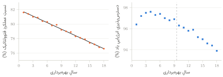
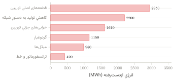
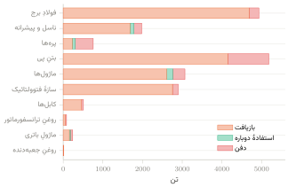
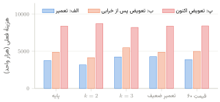
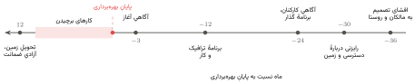
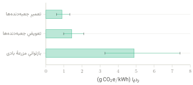

53 بهبودِ عملکرد، بازتوانی و برچیدنِ نیروگاه
53.1 نقشهٔ فصل
پس از این فصل، خواننده میتواند:
- عملکردِ بلندمدت را با روند و فاصلهٔ اطمینان بخوانَد: افتِ فتوولتائیک، دسترسپذیریِ باد، انرژیِ ازدسترفته به ازای علت و مقایسه با همتایان.
- تعمیر، ارتقا، جایگزینی و بازتوانی را با عمرِ باقیمانده، منسوخشدن، الزامهای تازهٔ شبکه، مجوز و زمانِ ازکارافتادگی بسنجد.
- برچیدن را با تراز و مسیرِ مواد، ذخیرهٔ مالی، زنجیرهٔ تحویلِ پسماند و بازگرداندنِ ساختگاه برنامهریزی کند.
- میانِ تعمیر و جایگزینی با هزینهٔ چرخهٔ عمر، ازکارافتادگی، عمرِ باقیمانده و پسماند تصمیم بگیرد و فرضها را بیازماید.
- مدیریتِ دارایی و تابآوری را برای قلمهای دیرتحویل، منسوخشدن، اقلیم، پیوستگیِ کار و بیمه به کار برد.
- تصمیمهای چرخهٔ عمر را با منطقِ قابلیتِ اطمینانمحور و ارزشِ بازرسی بگیرد.
- برچیدن یا بازتوانی را با تعهدهای اجتماعی، گذارِ نیروی کار، پیوستگیِ سابقهها و ردپای چرخهٔ عمر روی یک مرزِ یکسان اداره کند.
پیشنیازها: مالیِ پروژه (فصل 21)، محیطِ زیست و اجتماع (فصل 33) و نگهداری و قابلیتِ اطمینان (فصل 52).
- اگر جعبهدندهای ۱۸ سال کار کرده باشد، عمرِ باقیماندهاش همان عمرِ میانگینِ یک جعبهدندهٔ نو منهای ۱۸ سال است؟
- چرا جایگزینیِ زودهنگامِ یک قطعه در سالِ ۱۸ نیروگاهی ۲۵ساله شاید نیرزد؟
- ذخیرهٔ مالیِ برچیدن اگر دیر آغاز شود چه میشود؟
- چرا «انتشارِ پرهیزشده» به ردپای نیروگاه افزوده نمیشود؟
پاسخها: (۱) نه، عمرِ باقیمانده پرسشی شرطی است و برای قطعهٔ فرسایشی کمتر است؛ (۲) چون عمرِ قطعهٔ نو پس از پایانِ نیروگاه به کار نمیآید؛ (۳) پرداختِ سالانه چند برابر میشود؛ (۴) چون دو پرسشِ جدا با روشها و عدمِ قطعیتهای جداست. اگر دو پرسش یا بیشتر را نتوانستید، بخش 52.6، فصل 21 و فصل 33 را مرور کنید.
جایگاهِ این فصل در نیروگاهِ P. نیروگاه اکنون در سالِ بهرهبرداریِ ۱۸ است (آموزشی). قراردادِ خرید تا سالِ ۲۰ است و عمرِ طراحی ۲۵ سال. سابقههای فصلهای ۳۷، ۵۱ و ۵۲ و مبناهای D-012 تا D-056 پیشِ روست (A-538 تا A-545). پرسشها: با مبدّلها، جعبهدندهها و باتری چه کنیم، مزرعهٔ بادی را بازتوانی کنیم یا پس از سالِ ۲۵ برچینیم، و برچیدن را چگونه آماده کنیم. نتیجه مبنای D-057 است.
دادهها ساختگی و قیمتها و هزینهها آموزشیاند. این فصل دربارهٔ مجوز، بازگرداندنِ زمین، جبران یا نگهداریِ سابقهها نتیجهٔ حقوقی نمیگیرد. اینها در محل وارسی میشوند (فصلهای ۵۴ تا ۵۸). کار با موادِ خطرناک به دستِ پیمانکارِ دارای مجوز و بی روشِ اجرایی در این کتاب است. انتشارِ پرهیزشده هرگز تضمین یا به ردپا افزوده نمیشود.
53.2 الف. عملکردِ چرخهٔ عمر
پس از ۱۸ سال، نیروگاه سابقهای دارد که در طراحی نداشت: روندِ هر سال، خرابیها و انرژیِ ازدسترفته به ازای علت. این بخش این سابقه را با روند و فاصلهٔ اطمینان میخوانَد، با همتایان مقایسه میکند و فرصتهای بهبود را غربال میکند (فصل 37).
53.2.1 افتِ فتوولتائیک
ایده. شیبِ خطِ کمترین مربعاتِ نسبتِ عملکردِ سالانه، با خطای معیارش، نرخِ افت را با فاصلهٔ اطمینان میدهد.
def trend(years, values, conf_z: float = 1.96) -> tuple:
"""Least-squares slope per year and its half-width (normal approx)."""
x = np.asarray(years, float)
y = np.asarray(values, float)
b, a = np.polyfit(x, y, 1)
res = y - (a + b * x)
s = math.sqrt(float(np.sum(res ** 2)) / (x.size - 2))
se = s / math.sqrt(float(np.sum((x - x.mean()) ** 2)))
return float(b), float(conf_z * se)PV performance ratio by year (temperature-corrected, %), years 1-18
81.6 81.4 81.0 80.9 80.4 80.3 79.8 79.9 79.2
79.0 78.9 78.3 78.1 77.9 77.4 77.2 76.8 76.6
slope -0.300 points a year +/- 0.011 (95 %) = 0.37 % a year relative
slower than the 0.5 %/yr of the finance model (ch 21): the interval
(+/- 0.01 %/yr) excludes it - the modules age better than
planned, a finding for the energy model; the first five years
alone gave 0.36 +/- 0.08 %/yr - enough to correct the
model in year 6, had anyone looked (ch 37)
مثال 53.1 (ماژولهایی که بهتر از برنامه پیر شدند) پرسش. نرخِ افت چقدر است و با فرضِ مدلِ مالی چه فرقی دارد؟
پاسخ. شیبِ −0.300 واحد در سال با ±0.011، یعنی 0.37 % در سال نسبت به سالِ نخست، در برابرِ 0.5 % مدلِ مالی (فصل 21).
تفسیر. فاصله فرضِ مدل را کنار میگذارد: ماژولها بهتر از برنامه پیر شدهاند و این یافتهای برای مدلِ انرژی است. پنج سالِ نخست بهتنهایی 0.36 ± 0.08 درصد میداد: کافی برای اصلاحِ مدل در سالِ ششم، اگر کسی نگاه میکرد.
53.2.2 روندِ دسترسپذیریِ باد
wind energy availability by year (%)
96.4 97.2 97.5 97.6 97.3 97.4 97.0 96.8 96.9
96.3 96.1 95.8 95.9 95.2 95.0 94.6 94.4 93.9
years 4-9: -0.15 points a year; years 10-18: -0.30 +/- 0.04
the fall steepens after year 9: the major components enter
wear-out (ch 52 Weibull) - one straight line through all
18 years would hide the break and the causeمثال 53.2 (شکستی که یک خط پنهان میکند) پرسش. شیبِ دسترسپذیری پیش و پس از سالِ ۹ چقدر است؟
پاسخ. −0.15 واحد در سال در سالهای ۴ تا ۹ و −0.30 ± 0.04 در سالهای ۱۰ تا ۱۸.
تفسیر. افت پس از سالِ ۹ تند میشود: قطعههای اصلی وارد دورهٔ فرسایش شدهاند (بخش 52.6.1). یک خطِ راست از هر ۱۸ سال، شکست و علتش را پنهان میکرد.
53.2.3 انرژیِ ازدسترفته در سالِ ۱۸
energy lost in year 18 by cause (9,310 MWh)
turbine major components 2,950 32% 206 k u
grid curtailment 2,200 24% 154 k u
turbine minor 1,610 17% 113 k u
soiling 1,150 12% 80 k u
inverters 980 11% 69 k u
transformers and line 420 5% 29 k u
the largest: turbine major components - the one cause an intervention
can remove; curtailment is the grid's (ch 51) and soiling
the cleaning plan's (ch 52) - each goes to its owner
مثال 53.3 (هر علت با صاحبش) پرسش. بزرگترین علتِ انرژیِ ازدسترفته چیست؟
پاسخ. قطعههای اصلیِ توربین با 2,950 از 9,310 MWh، 32 %. کاهشِ تولید به دستورِ شبکه 24 %.
تفسیر. قطعههای اصلی علتی است که یک مداخله میتواند بردارد. کاهشِ تولید از آنِ شبکه است (بخش 51.6) و گردوغبار از آنِ برنامهٔ شستشو (بخش 52.8). هر علت به صاحبش میرود.
53.2.4 مقایسه با همتایان
year 18 against three peers of similar age (teaching data)
plant wind availability % PV PR %
Plant P 93.9 76.6
peer A 96.2 79.5
peer B 95.1 78.0
peer C 97.0 80.1
Plant P is 2.3 points below the peers' median in wind
availability and 2.9 in PR: the gap is larger in wind -
peers differ in climate and contract, so a benchmark asks
the question; the plant's own records answer itمثال 53.4 (پرسشی که پاسخ نیست) پرسش. نیروگاهِ P چقدر از میانهٔ همتایان عقب است؟
پاسخ. 2.3 واحد در دسترسپذیریِ باد و 2.9 در نسبتِ عملکرد.
تفسیر. مقایسهٔ عملکرد با همتایان پرسش را طرح میکند. همتایان در اقلیم و قرارداد فرق دارند، پس پاسخ از سابقههای خودِ نیروگاه میآید (مثال 53.3).
53.2.5 غربالِ فرصتهای بهبود
improvement opportunities at 70 u/MWh over the years left (teaching)
opportunity cost k u MWh/yr NPV k u payback yr
yaw recalibration fleet-wide 45 600 177 1.1
cleaning trigger by soiling station 60 520 133 1.6
blade leading-edge repair 110 480 26 3.3
inverter replacement (10 units) 4,200 1,350 -3,699 44.4
gearbox replacement programme 7,440 2,400 -6,550 44.3
PV module repowering (bifacial) 21,000 9,500 -17,478 31.6
the cheap operating fixes pay at once; the replacement
programmes do not pay on energy alone - their case rests on
avoided repairs and downtime and on the years after the PPA,
which lesson B and the decision lab weighمثال 53.5 (اصلاحهای ارزان و برنامههای گران) پرسش. کدام فرصتها با انرژی بهتنهایی میارزند؟
پاسخ. تنظیمِ دوبارهٔ سمتگیری با 177، محرکِ شستشو با 133 و تعمیرِ لبهٔ پرهها با 26 هزار واحد ارزشِ فعلیِ مثبت. جایگزینیِ مبدّلها، جعبهدندهها و ماژولها با انرژی بهتنهایی منفیاند.
تفسیر. پروندهٔ برنامههای جایگزینی بر تعمیرهای پرهیزشده، ازکارافتادگی و سالهای پس از قراردادِ خرید استوار است. بخشِ «ب» و آزمایشگاهِ تصمیم آنها را میسنجند.
53.2.6 کاهشِ تولیدی که سال به سال بیشتر شد
grid curtailment by year (MWh): the region adds wind and solar
230 260 300 380 450 560 640 790 900
1050 1210 1380 1500 1680 1820 1950 2080 2200
last eight years: +142 +/- 6 MWh a year; year 25 by the line: 3,193 MWh
curtailment grows as the grid fills: a repowering adds most
energy in windy hours, when curtailment is also most likely -
its gain must be valued after curtailment, not beforeمثال 53.6 (سودی که پس از کاهشِ تولید سنجیده میشود) پرسش. کاهشِ تولید به دستورِ شبکه با چه شیبی رشد میکند و تا سالِ ۲۵ به کجا میرسد؟
پاسخ. در هشت سالِ آخر +142 ± 6 مگاواتساعت در سال. با همان خط، 3,193 MWh در سالِ ۲۵.
تفسیر. با پرشدنِ شبکه کاهشِ تولید زیاد میشود. بازتوانی بیشترِ انرژیِ تازه را در ساعتهای پرباد میافزاید، همان ساعتهایی که کاهش محتملتر است. سودش پس از کاهشِ تولید سنجیده میشود (مثال 53.11).
53.2.7 گردوغبار و پیری را جدا کردن
PR just before and just after the four washes of year 18 (%)
before 76.1 75.4 75.0 74.6
after 76.8 76.7 76.6 76.7
soiling costs 1.4 points on average before a wash; the after-wash
level 76.7 % is the aged plant - the 76.6 % of lesson A
is an after-wash series, so the 0.37 %/yr is ageing, not dirtمثال 53.7 (پیری، نه کثیفی) پرسش. گردوغبار پیش از شستشو چقدر نسبتِ عملکرد را پایین میآورد؟
پاسخ. بهطورِ میانگین 1.4 واحد. ترازِ پس از شستشو 76.7 % است.
تفسیر. سریِ بخشِ «الف» پس از شستشو اندازه گرفته شده است، پس 0.37 % در سال پیری است، نه کثیفی. بی این جداسازی، نرخِ افت با گردوغبار آمیخته میشد (بخش 37.4).
53.2.8 توربینهای بدکار
energy lost by turbine in year 18 (MWh, all causes)
T01:310 T02:180 T03:640 T04:150 T05:520 T06:170
T07:590 T08:160 T09:200 T10:140 T11:190 T12:160
the three worst (T03, T07, T05) are 51% of the loss
a fleet decision is usually a few-turbine decision: the bad
actors get the intervention first - T03 (converter trips and
its pitch cabinet) and T07 (gearbox bearing) are stories of
ch 52, T05 the gearbox of the insurance lesson (E)مثال 53.8 (تصمیمِ ناوگان، تصمیمِ چند توربین) پرسش. سه توربینِ بدتر چه سهمی از انرژیِ ازدسترفته دارند؟
پاسخ. T03، T07 و T05 با هم 51 %.
تفسیر. تصمیمِ ناوگان معمولاً تصمیمِ چند توربین است و مداخله نخست به بدکارها میرسد. T03 با قطعهای مبدّل و تابلوی گامش و T07 با یاتاقانِ جعبهدنده داستانهای فصلِ ۵۲ بودند (مثال 52.31، مثال 52.13).
- نرخِ افت با فاصلهٔ اطمینان چگونه از نسبتِ عملکردِ سالانه میآید؟
- چرا ۱۸ سال فاصله را باریکتر از ۵ سال میکند؟
- چرا یک خطِ راست شکستِ روندِ دسترسپذیری را پنهان میکند؟
- چرا کاهشِ تولید به دستورِ شبکه به مداخلهٔ نیروگاه نمیرود؟
- مقایسه با همتایان چه چیزی را نمیتواند پاسخ دهد؟
- چرا اصلاحهای ارزان زود میارزند؟
- شکل 53.1 را بخوانید.
53.3 ب. تعمیر، ارتقا یا بازتوانی
هر تصمیمِ چرخهٔ عمر چند پرسش دارد: قطعه چقدر عمر دارد، پشتیبانیِ سازنده تا کِی است، الزامهای شبکه چه تغییری کردهاند، ازکارافتادگی چقدر است، و مجوز چه میخواهد. بازتوانی یعنی جایگزینیِ تجهیزِ اصلی با تجهیزِ تازهتر و معمولاً بزرگتر در همان ساختگاه (فصل 1).
53.3.1 ناوگانِ مبدّلها: روند و پشتیبانی
PV inverter fleet (10 units): failures a unit-year, years 13-18
0.5 0.6 0.7 0.9 1.2 1.6
growth slope over years 13-18: 1.45 (above 1: failures thickening)
maker's support ends after year 21: spares and firmware
stop while the plant has 7 years to run (ch 52 obsolescence)
- a fleet that is wearing out AND losing support is a
replacement candidate, whatever its repair cost todayمثال 53.9 (فرسایش و پایانِ پشتیبانی) پرسش. شیبِ رشدِ خرابیهای مبدّلها در سالهای ۱۳ تا ۱۸ چیست؟
پاسخ. 1.45، بالای یک: خرابیها پرپشتتر میشوند. پشتیبانیِ سازنده پس از سالِ ۲۱ تمام میشود.
تفسیر. ناوگانی که هم فرسوده میشود و هم پشتیبانیاش را از دست میدهد، نامزدِ جایگزینی است، هر قدر هم تعمیرِ امروزش ارزان باشد (بخش 52.10.6).
53.3.2 عمرِ باقیماندهٔ یک جعبهدنده
ایده. عمرِ باقیماندهٔ واحدی که تا \(t_0\) سالم مانده، از قابلیتِ اطمینانِ شرطی میآید:
\[ R(\Delta t \mid t_0) = \exp\!\left[-\left(\frac{t_0 + \Delta t}{c}\right)^{k} + \left(\frac{t_0}{c}\right)^{k}\right] \tag{53.1}\]
و میانهٔ آن \(c\bigl((t_0/c)^k + \ln 2\bigr)^{1/k} - t_0\) است.
def conditional_reliability(t_now: float, dt, k: float, c: float):
"""P(survive dt more | survived t_now), Weibull shape k, scale c."""
dt = np.asarray(dt, float)
return np.exp(-(((t_now + dt) / c) ** k - (t_now / c) ** k))
def median_remaining(t_now: float, k: float, c: float) -> float:
"""Median remaining life of a unit that has survived t_now."""
return c * ((t_now / c) ** k + math.log(2)) ** (1 / k) - t_nowmain gearboxes: Weibull k 2.5, c 150,000 h; each has run 146,642 h
median remaining life 36,096 h (4.4 years of running)
chance one survives the 7 years to year 25: 30%
expected failures in the fleet of 12 by year 25: 8.4
remaining life is a conditional question: an 18-year-old
gearbox has less left than a new one's mean life suggestsمثال 53.10 (هجدهساله، نه نو) پرسش. میانهٔ عمرِ باقیمانده و احتمالِ ماندن تا سالِ ۲۵ چقدر است؟
پاسخ. 36,096 ساعت، حدودِ 4.4 سالِ کار. احتمالِ ماندن تا سالِ ۲۵ 30 %، یعنی حدودِ 8.4 خرابی در ناوگانِ ۱۲تایی.
تفسیر. عمرِ باقیمانده پرسشی شرطی است. جعبهدندهٔ ۱۸ساله کمتر از آن دارد که میانگینِ عمرِ یک واحدِ نو نشان میدهد (مثال 52.47).
53.3.3 بازتوانی درونِ حدِ صادرات
repowering the 12 turbines: 5.0 -> 6.2 MW, rotor 150 -> 170 m
wind energy up by (170/150)^2 x 1.04 = 1.34 (capped at the new rating)
plant energy below the 100 MW export limit: +55.0 GWh a year;
extra energy spilled at the limit: 3.6 GWh a year
the limit takes 6% of the extra wind energy - small
now, larger if the PV is repowered too; and a repowering is
a new grid application (the next lesson, ch 17, ch 28)مثال 53.11 (پنجاهوپنج گیگاواتساعت و حدِ صادرات) پرسش. بازتوانی با توربینهای 6.2 MW و روتورِ ۱۷۰ متری چقدر انرژی میافزاید؟
پاسخ. انرژیِ باد \((170/150)^2 \times 1.04 = 1.34\) برابر، با سقفِ ظرفیتِ تازه. انرژیِ نیروگاه زیرِ حدِ 100 MW: +55.0 GWh در سال. 3.6 GWh اضافه پشتِ حد ریخته میشود.
تفسیر. حد 6 % انرژیِ اضافه را میگیرد: اکنون کم، اگر فتوولتائیک هم بازتوانی شود بیشتر. بازتوانی درخواستِ تازهٔ اتصال است (بخش 53.3.4، فصل 17).
53.3.4 الزامهای شبکه که عوض شدند
grid requirements: at COD and now (teaching; real ones from the operator)
reactive power at full output meets
0.95 pf -> 0.95 pf plus voltage control
fault ride-through depth GAP
0.15 pu, 150 ms -> 0 pu, 150 ms
frequency response GAP
none required -> droop 4 %, 10 % headroom
telemetry latency meets
4 s -> 1 s
cyber requirements GAP
none stated -> IEC 62443 based, audited
3 gaps: an existing plant usually keeps its connection
terms, but a repowering is a new application and must meet
the requirements of its date - the gaps become part of the
repowering's cost (converters, controls, OT security)مثال 53.12 (سه شکاف که هزینهٔ بازتوانی میشوند) پرسش. نیروگاه کدام الزامهای امروز را برآورده نمیکند؟
پاسخ. سه: عمقِ عبور از خطا، پاسخِ فرکانسی و الزامهای سایبری.
تفسیر. نیروگاهِ موجود معمولاً شرایطِ اتصالش را نگه میدارد، ولی بازتوانی درخواستِ تازه است و باید الزامهای تاریخِ خودش را برآورده کند (فصل 28). شکافها بخشی از هزینهٔ بازتوانی میشوند: مبدّل، کنترل و امنیتِ فناوریِ عملیاتی (فصل 36). الزامهای واقعی را بهرهبردارِ شبکه میدهد.
53.3.5 زمانبندیِ بازتوانی
repowering timeline (months, teaching; steps partly overlap in practice)
permit amendment (teaching) 14.0
grid study and agreement 10.0
procurement of turbines 12.0
dismantling, 2 turbines a week 1.5 wind farm down
foundation adaptation 2.0 wind farm down
erection and commissioning 3.0 wind farm down
36 months before any turbine stops; 6.5 months with the farm
down in sequence - about 105 GWh of wind energy lost if
all stopped together; turbine by turbine it is a fraction,
and the PV keeps exporting (lesson F)مثال 53.13 (سه سال پیش از نخستین توقف) پرسش. چند ماه پیش از توقفِ نخستین توربین کار لازم است و مزرعه چند ماه خاموش است؟
پاسخ. ۳۶ ماه برای مجوز، مطالعهٔ شبکه و خرید، سپس 6.5 ماه کارِ میدانی. اگر همهٔ توربینها با هم بایستند، حدودِ 105 GWh انرژیِ باد از دست میرود.
تفسیر. توربین به توربین فقط کسری از آن است و فتوولتائیک صادر میکند. تصمیمِ بازتوانی برای پایانِ سالِ ۲۵ باید تا سالِ ۲۲ گرفته شود.
53.3.6 ارتقای مبدّلها
replacing the 10 inverters: efficiency 0.978 -> 0.986
energy gained 818 MWh a year; repairs avoided 720 k u a year;
downtime avoided 1,920 MWh a year
value about 912 k u a year against 4,200 k u: payback 4.6 years
over the 7 years left at 7.5%: NPV +629 k u - it pays inside the
plant's life once the avoided repairs and downtime are counted;
lesson A's screen counted energy only and called it negative
- and support ends at year 21 whatever is decided (lesson B)مثال 53.14 (تعمیرهای پرهیزشده، نه فقط انرژی) پرسش. جایگزینیِ ده مبدّل در هفت سالِ باقیمانده میارزد؟
پاسخ. ارزشِ سالانه حدودِ 912 هزار واحد: انرژیِ کارایی 818 MWh، تعمیرهای پرهیزشده 720 و ازکارافتادگیِ پرهیزشده 1,920 MWh. ارزشِ فعلیِ خالصِ هفتساله +629 هزار واحد.
تفسیر. با شمردنِ تعمیرها و ازکارافتادگیِ پرهیزشده، جایگزینی درونِ عمرِ نیروگاه میارزد. غربالِ بخشِ «الف» فقط انرژی را شمرد و آن را منفی خواند (مثال 53.5). پاسخِ مبدّلها با پاسخِ جعبهدندهها فرق دارد: نرخِ خرابیِ بالا و پایانِ پشتیبانی تفاوت را میسازند.
53.3.7 باتری: افزایشِ ظرفیت یا کنارگذاشتن
battery at year 18: state of health 71% of 40 MWh; the service needs 80%
augmentation 3.6 MWh at 160 k u/MWh = 576 k u
value of keeping the battery in service: about 864 k u a year
(teaching spread and cycles)
augmentation pays back in 0.7 years - inside the 7 left; but
new cells beside 18-year-old ones age differently (ch 19, ch 45):
the augmentation is a separate string with its own BMS limitsمثال 53.15 (رشتهای جدا برای سلولهای نو) پرسش. افزایشِ ظرفیتِ باتری برای رسیدن به ۸۰ درصد چقدر هزینه دارد و چقدر میارزد؟
پاسخ. 3.6 MWh با 576 هزار واحد، در برابرِ ارزشِ حدودِ 864 هزار واحد در سال: بازگشت در کمتر از یک سال.
تفسیر. سلولهای نو کنارِ سلولهای ۱۸ساله متفاوت پیر میشوند (فصل 19، فصل 45). افزایشِ ظرفیت رشتهای جدا با حدهای خودِ سامانهٔ مدیریتِ باتری است.
53.3.8 مجوزهای بازتوانی
repowering approvals (teaching; real ones from local verification, ch 54-58)
approval subject months
environmental permit amendment new turbine height and noise 14
aviation clearance tip height 205 m 6
grid connection amendment new capability and studies 10
land lease extension beyond year 25 8
construction permit foundations adapted 5
bird and bat survey update two seasons 18
the longest: bird and bat survey update (18 months) - two seasons
of birds cannot be hurried, so the repowering clock starts
with the survey (ch 33)مثال 53.16 (دو فصلِ پرنده) پرسش. کدام مجوز طولانیترین زمان را دارد؟
پاسخ. بهروزکردنِ پیمایشِ پرنده و خفاش با ۱۸ ماه، دو فصل.
تفسیر. دو فصلِ پرنده را نمیشود شتاب داد. ساعتِ بازتوانی با پیمایش آغاز میشود (فصل 33). مجوزهای واقعی و زمانهایشان از وارسیِ محلی میآیند.
53.3.9 هزینهٔ سالانهٔ همارز
ایده. هزینهٔ سالانهٔ همارز هزینهٔ فعلیِ یک گزینه را به پرداختِ سالانهٔ ثابت در عمرِ خودش تبدیل میکند تا گزینههای با عمرهای متفاوت مقایسه شوند:
\[ \text{EAC} = \text{PV}\,\frac{i}{1 - (1+i)^{-n}} \tag{53.2}\]
inverters: keep repairing (7 years left) or new units (15-year life)
keep: 720 k u repairs and 2,738 MWh lost a year -> EAC 912 k u
new: 4,200 k u, then 40 k u and 30 MWh a year over 15 years -> EAC 518 k u
equivalent annual cost compares options of different lives on
one footing: new units cost 394 k u a year less; the 15 years
count fully only if the plant (or a buyer) uses them - here the
7-year NPV of the previous lesson agrees, so both views point
the same wayمثال 53.17 (دو دیدگاه، یک جهت) پرسش. ادامهٔ تعمیر و مبدّلهای نو با هزینهٔ سالانهٔ همارز چگونه مقایسه میشوند؟
پاسخ. ادامه 912 و مبدّلِ نو 518 هزار واحد در سال: 394 کمتر.
تفسیر. پانزده سالِ مبدّلِ نو فقط وقتی کامل حساب میشود که نیروگاه یا خریدار آنها را به کار برد. اینجا ارزشِ فعلیِ هفتساله هم همین را میگوید. برای جعبهدندهها دو دیدگاه همجهت نبودند (بخش 53.5).
53.3.10 خستگیِ برج و تمدیدِ عمر
tower fatigue: the site loads are 82% of the design loads (ch 30,
teaching ratio from measured loads)
damage used by year 18: 0.59; at the same rate the towers last
12.5 more years (to year 30)
a life extension to 30 fits the towers on this record - the
extension case also needs the foundations, bolts and the
maker's and certifier's assessment (ch 30, ch 54-58)مثال 53.18 (برجی که تا سالِ ۳۰ دوام میآورد) پرسش. با بارِ ساختگاه 82 % بارِ طراحی، برجها چقدر عمرِ خستگی دارند؟
پاسخ. آسیبِ مصرفشده تا سالِ ۱۸: \(18/25 \times 0.82 = 0.59\). با همان نرخ 12.5 سالِ دیگر، تا سالِ ۳۰.
تفسیر. تمدیدِ عمر تا ۳۰ با این سابقه به برجها میخورد. پروندهٔ تمدید پی، پیچها و ارزیابیِ سازنده و گواهیدهنده را هم میخواهد (فصل 30).
53.3.11 توربینِ نو روی پیِ کهنه
overturning moment at the foundation (MN m, teaching): old turbine 96,
a 170 m rotor about 1.30 times as much: 125 against a capacity of 118
utilisation 106%: the old foundations do not carry the new rotor
without adaptation (ch 30) - the 'foundation adaptation' line
of the repowering plan is a design, a permit and a costمثال 53.19 (پیی که روتورِ نو را نمیکشد) پرسش. پیِ کهنه گشتاورِ واژگونیِ توربینِ نو را تحمل میکند؟
پاسخ. نه: 125 در برابرِ ظرفیتِ 118 مگانیوتنمتر، بهرهوری 106 %.
تفسیر. سطرِ «تطبیقِ پی» در برنامهٔ بازتوانی یک طراحی، یک مجوز و یک هزینه است (فصل 30، مثال 53.13).
53.3.12 بازتوانیِ جزئی
repower all 12 turbines or the worst 6 (teaching gains after the export limit)
all 12: +55 GWh a year for 85,560 k u = 1,556 k u per GWh a year
worst 6: +30 GWh a year for 42,780 k u = 1,426 k u per GWh a year
the worst six give more per unit spent (their old output is
lowest) - but two turbine types on one site double the
spares and the training (ch 52)مثال 53.20 (شش توربینِ بدتر نخست) پرسش. بازتوانیِ همهٔ ۱۲ توربین و شش توربینِ بدتر در هر گیگاواتساعت چقدر هزینه دارند؟
پاسخ. 1,556 و 1,426 هزار واحد برای هر گیگاواتساعت در سال.
تفسیر. شش توربینِ بدتر برای هر واحدِ هزینه بیشتر میدهند، چون تولیدِ کهنهشان کمتر است. ولی دو نوع توربین در یک ساختگاه یدکها و آموزش را دو برابر میکند (بخش 52.2.11).
53.3.13 تمدید تا سالِ ۳۰ یا پایان در ۲۵
extend to year 30 or retire at 25 (seen from year 18, teaching)
extension capex 9,000 k u; years 26-30: energy value 10,786 k u
a year at 45 u/MWh, opex 4,400 k u a year
NPV of the extension today: +10,150 k u
the decommissioning cost is the same, only later (a deferral
worth something at 7.5 %) - the extension is decided with the
tower fatigue, the permits and the price after the PPAمثال 53.21 (تمدیدی که با قیمتِ پس از قرارداد تصمیم گرفته میشود) پرسش. تمدیدِ پنجساله با سرمایهٔ 9,000 هزار واحد امروز چقدر میارزد؟
پاسخ. ارزشِ انرژی 10,786 و هزینهٔ بهرهبرداری 4,400 هزار واحد در سال در سالهای ۲۶ تا ۳۰. ارزشِ فعلیِ خالص امروز +10,150 هزار واحد.
تفسیر. هزینهٔ برچیدن همان است، فقط دیرتر. تمدید با خستگیِ برج (مثال 53.18)، مجوزها و قیمتِ پس از قرارداد تصمیم گرفته میشود. اگر تمدید پذیرفته شود، پاسخِ آزمایشگاهِ تصمیم برای جعبهدندهها با افقِ دوازدهساله وارسی میشود (مثال 53.36).
- بازتوانی را تعریف کنید.
- چرا پایانِ پشتیبانیِ سازنده تصمیم را جلو میآورد؟
- معادلهٔ 53.1 را بنویسید و میانهٔ عمرِ باقیمانده را بدهید.
- چرا افزایشِ قطرِ روتور انرژی را با مربعِ نسبت زیاد میکند؟
- چرا بازتوانی درخواستِ تازهٔ اتصال است؟
- شکافهای الزامهای شبکه چه هزینهای میسازند؟
- تصمیمِ بازتوانی چند سال پیش از پایانِ عمر گرفته میشود؟
53.4 پ. برچیدن و چرخشپذیری
برچیدن یعنی جمعکردنِ تجهیز، بردنِ مواد به مسیرهای درست و بازگرداندنِ ساختگاه. سه پرسش دارد: چه موادی و از کدام مسیر (بازیافت، استفادهٔ دوباره، دفن)، چه کسی پولش را میدهد و چه شاهدی نشان میدهد کار تمام شده است. فصلِ ۳۰ برچیدنِ پیها و فصلِ ۳۳ برنامهٔ پایان را دید. این بخش عدد میگذارد.
53.4.1 تراز و مسیرِ مواد
def waste_balance(materials: dict) -> dict:
"""materials: name -> (tonnes, share recycled, share reused, hazardous?).
Returns tonnes recycled, reused, landfilled and hazardous."""
rec = sum(t * r for t, r, _, _ in materials.values())
reu = sum(t * u for t, _, u, _ in materials.values())
tot = sum(t for t, *_ in materials.values())
haz = sum(t for t, _, _, h in materials.values() if h)
return dict(total=tot, recycled=rec, reused=reu, landfill=tot - rec - reu,
hazardous=haz)materials at closure (t, teaching shares)
material tonnes recycled reused landfill
tower steel (weighed, ch 47) 4,932 4,685 0 247
nacelles and drivetrains 1,980 1,683 99 198
blades (composite) 756 227 76 454
foundation concrete (top 1 m) 5,184 4,147 0 1,037
PV modules 3,069 2,608 153 307
PV structures, steel 2,900 2,755 0 145
cables (Al, Cu) 510 459 0 51
transformer oil 85 51 0 34 HAZ
battery modules 240 156 24 60 HAZ
gearbox and hydraulic oil 14 9 0 6 HAZ
total 19,670 t: recycled 85%, reused 2%, landfill 13%
hazardous 339 t - small by mass, large by obligation:
each load goes to a licensed receiver with its transfer note
مثال 53.22 (کم در جرم، زیاد در تکلیف) پرسش. چه سهمی از 19,670 تن بازیافت میشود و چقدر خطرناک است؟
پاسخ. 85 % بازیافت، 2 % استفادهٔ دوباره و 13 % دفن. 339 تن خطرناک: روغنها و ماژولهای باتری.
تفسیر. بخشِ خطرناک در جرم کوچک و در تکلیف بزرگ است. هر بار با برگهٔ انتقالِ پسماند به گیرندهٔ دارای مجوز میرود (بخش 53.4.4). جرمِ برجها همان جرمِ وزنشدهٔ فصلِ ۴۷ است، نه جرمِ پوسته (بخش 47.4).
53.4.2 پرهها
36 blades, 756 t of composite: routes (teaching shares)
cement co-processing 55% 416 t
mechanical grinding (filler) 15% 113 t
reuse (structures) 10% 76 t
landfill (where allowed) 20% 151 t
most blade 'recycling' is energy and mineral recovery in a
kiln, not new blades; whether landfill is allowed at all is a
local rule (ch 54-58) - the closure plan names the route and
its receiver before the cranes comeمثال 53.23 (بازیافتی که پرهٔ تازه نمیسازد) پرسش. ۷۵۶ تن کامپوزیتِ پره از کدام مسیرها میروند؟
پاسخ. بیشترین سهم، 55 %، همپردازش در کورهٔ سیمان. سپس آسیابکردن 15 %، استفادهٔ دوباره 10 % و دفن، جایی که مجاز است، 20 %.
تفسیر. بیشترِ «بازیافتِ» پره بازیابیِ انرژی و ماده در کوره است، نه پرهٔ تازه. اینکه دفن اصلاً مجاز است یا نه، قاعدهٔ محلی است (فصلهای ۵۴ تا ۵۸). برنامهٔ پایان مسیر و گیرنده را پیش از آمدنِ جرثقیلها نام میبرد.
53.4.3 ذخیرهٔ مالیِ برچیدن
ایده. پرداختِ سالانهٔ صندوقِ ذخیره که پس از \(n\) سال با نرخِ \(i\) به هدفِ \(F\) میرسد:
\[ p = F\,\frac{i}{(1+i)^n - 1} \tag{53.3}\]
decommissioning cost 4,000 k u less salvage 1,500 (year-1 money, ch 21)
at year 25 with 2.5% inflation: 4,635 k u
sinking fund at 4 %: 111 k u a year from year 1, or 587 from year 18
starting late costs 5.3 times a year - the provision
is a bond or a fund held for the landholder and authority
(ch 33 closure), its size reviewed as salvage prices moveمثال 53.24 (پنج برابر برای دیر آغازکردن) پرسش. ذخیرهٔ مالیِ برچیدن اگر از سالِ ۱ آغاز شود و اگر از سالِ ۱۸، سالانه چقدر است؟
پاسخ. هزینهٔ خالصِ سالِ ۲۵ با تورمِ 2.5 %: 4,635 هزار واحد. از سالِ ۱: 111 و پس از سالِ ۱۸ (هفت پرداخت در سالهای ۱۹ تا ۲۵): 587 هزار واحد در سال، 5.3 برابر.
تفسیر. ذخیره ضمانتنامه یا صندوقی است که برای مالکِ زمین و مقامِ مسئول نگه داشته میشود (بخش 33.4) و اندازهاش با قیمتِ اسقاط بازبینی میشود (فصل 21).
53.4.4 زنجیرهٔ تحویلِ پسماندِ خطرناک
hazardous loads: shipped against received (t), tolerance 2 %
transformer oil T1 18.0 17.9
transformer oil T2 18.0 18.0
unit transformer oil 25.0 24.8
gearbox oil 14.4 11.2 CHECK
battery modules lot 1 120.0 120.0
battery modules lot 2 120.0 119.6
1 load(s) to check: gearbox oil - 3.2 t missing
between the site and the receiver; until the transfer notes
reconcile, the closure evidence is not completeمثال 53.25 (سه تنِ گمشده میانِ ساختگاه و گیرنده) پرسش. کدام بار با گیرنده نمیخوانَد؟
پاسخ. روغنِ جعبهدنده: 14.4 تن فرستاده و 11.2 تن دریافت، 3.2 تن کم.
تفسیر. تا برگههای انتقال آشتی نکنند، شاهدِ برچیدن کامل نیست. زنجیرهٔ تحویل همان منطقِ فصلِ ۳۱ است، این بار برای پسماند.
53.4.5 ژرفای برداشتنِ پیها
12 turbine foundations: concrete removed (t), cost (k u) and truck loads
top 1 m (teaching permit case) 5,184 62 207
full removal 25,718 309 1,029
full removal is 5.0 times the trucks past the village
for land that the top-1-m case also returns to grazing; the
depth is the permit's and the landholder's agreement (ch 30,
ch 54-58), and the choice has a traffic and footprint costمثال 53.26 (پنج برابر کامیون کنارِ روستا) پرسش. برداشتنِ یک متر بالا و برداشتنِ کامل چقدر بتن و کامیون دارند؟
پاسخ. 5,184 در برابرِ 25,718 تن، 207 در برابرِ 1,029 بارِ کامیون.
تفسیر. برداشتنِ کامل پنج برابر کامیون از کنارِ روستا عبور میدهد، برای زمینی که در حالتِ یکمتری هم به چرا برمیگردد. ژرفا را مجوز و توافق با مالکِ زمین تعیین میکنند (فصل 30). انتخاب هزینهٔ ترافیک و ردپا دارد.
53.4.6 پایشِ بازگرداندنِ ساختگاه
vegetation cover after restoration, years 1-3 (%),
target 40 % (teaching, from the baseline of ch 33)
PV area plot 1 12 28 41
PV area plot 2 9 18 22
road verges 20 35 48
laydown 5 14 30
target met in year 3: PV area plot 1, road verges
the laydown is on its way (+16 points in year 3); plot 2 has
stalled (+4) - reseeding and a grazing pause, agreed
with the herders (ch 33); the bond is released only on the
monitoring recordمثال 53.27 (ضمانتی که با سابقهٔ پایش آزاد میشود) پرسش. کدام قطعهها در سالِ سوم به هدفِ پوششِ گیاهی رسیدند؟
پاسخ. قطعهٔ ۱ فتوولتائیک با ۴۱ درصد و حاشیهٔ راهها با ۴۸ درصد. انبار با ۳۰ درصد در راه است و قطعهٔ ۲ با ۲۲ درصد متوقف مانده است.
تفسیر. بذرپاشیِ دوباره و توقفِ چرا با توافقِ دامداران (فصل 33). ضمانت فقط با سابقهٔ پایش آزاد میشود.
53.4.7 کاربردِ دومِ ماژولها
modules at year 25: power as a share of nameplate (lesson A's rate
carried to year 25, spread teaching)
mean 0.908; below 85 % 2.6%; cracked (EL) 4%
fit for a second life after testing: 93% (102,073 modules)
a second life needs a test record per module (ch 41 flash
and EL) and a buyer; without both they are waste with a
recycling costمثال 53.28 (آزمون و خریدار) پرسش. با نرخِ افتِ بخشِ «الف»، چه سهمی از ماژولها برای کاربردِ دوم مناسباند؟
پاسخ. میانگینِ 0.908 توانِ اسمی در سالِ ۲۵. پس از آزمون 93 %، حدودِ 102,000 ماژول.
تفسیر. کاربردِ دوم سابقهٔ آزمون برای هر ماژول (بخش 41.6) و خریدار میخواهد. بی هر دو، ماژول پسماندی با هزینهٔ بازیافت است.
53.4.8 موجودیِ موادِ خطرناک
hazardous inventory at closure (from the asset register)
SF6 in 33 kV switchgear (kg) 66.0
SF6 in 132 kV breakers (kg) 27.0
transformer oil (t) 85.0
battery modules (t) 240.0
lead-acid UPS and DC batteries (t) 4.2
refrigerants in HVAC (kg) 96.0
SF6 93 kg: about 2,232 t CO2e if released (GWP ~24,000,
approximate, ch 24) - recovered by certified handlers, with
the recovery record as closure evidence; the inventory comes
from the register, so its completeness is lesson H's questionمثال 53.29 (گازی با اثرِ گرمایشیِ بزرگ) پرسش. موجودیِ گازِ کلیدها چقدر است و اگر رها شود چه اثری دارد؟
پاسخ. 93 kg، حدودِ 2,232 تن معادلِ دیاکسیدکربن با پتانسیلِ گرمایشیِ تقریبیِ ۲۴٬۰۰۰ (فصل 24).
تفسیر. گاز به دستِ کارکنانِ گواهیدار بازیافت میشود و سابقهٔ بازیافت شاهدِ پایان است. موجودی از دفترِ دارایی میآید، پس کاملبودنش پرسشِ بخشِ «ح» است.
53.4.9 قیمتِ اسقاط و ذخیرهٔ مالی
salvage value of steel and cable metal at closure (k u, teaching prices)
low 1,059
central 1,640
high 2,221
the salvage swings by 1,161 k u between the cases -
46% of the net decommissioning cost of 2,500 (ch 21): the
provision is sized on the low case and reviewed, never on
the high oneمثال 53.30 (ذخیره روی حالتِ پایین) پرسش. ارزشِ اسقاط در سه حالتِ قیمت چقدر جابهجا میشود؟
پاسخ. از 1,059 تا 2,221 هزار واحد، 1,161 جابهجایی: 46 % هزینهٔ خالصِ برچیدن.
تفسیر. ذخیره روی حالتِ پایین اندازهگیری و بازبینی میشود، هرگز روی حالتِ بالا (مثال 53.24).
53.4.10 کارزارِ برچیدن و باد
12 turbines down, 3 crane days each, lifts below 10 m/s (ch 31 teaching limit)
share of working hours below the limit in the data year: 83%
about 44 calendar working days for the crane - the season is
chosen with the wind (ch 31), and the PV keeps exportingمثال 53.31 (فصلِ برچیدن با باد) پرسش. جرثقیل چند روزِ کاری برای پیادهکردنِ ۱۲ توربین لازم دارد؟
پاسخ. 83 % ساعتهای کاری زیرِ 10 m/s. \(12 \times 3/0.83 = 44\) روزِ کاری.
تفسیر. فصلِ برچیدن مثلِ فصلِ نصب با باد انتخاب میشود (فصل 31). فتوولتائیک در این مدت صادر میکند.
53.4.11 بازیافتِ باتری
240 t of battery modules at closure (teaching routes and prices)
second life (lesson F) 25% 60 t -72 k u
recycling (hydrometallurgy) 65% 156 t +234 k u
residue to licensed disposal 10% 24 t +48 k u
net +210 k u; transport as dangerous goods under the
applicable rules (ch 19, UN Manual of Tests) by licensed
carriers - the receiver's certificate closes each lotمثال 53.32 (گواهیِ گیرنده برای هر محموله) پرسش. ۲۴۰ تن ماژولِ باتری از کدام مسیرها میروند و هزینهٔ خالص چیست؟
پاسخ. 25 % کاربردِ دوم، 65 % بازیافت و 10 % پسماند به دفعِ دارای مجوز. هزینهٔ خالص +210 هزار واحد.
تفسیر. حمل بهعنوانِ کالای خطرناک زیرِ قاعدههای کاربردی (فصل 19) و با حملکنندهٔ دارای مجوز است. گواهیِ گیرنده هر محموله را میبندد.
53.4.12 ترتیبِ کارهای برچیدن
decommissioning works in order (records, not a method statement)
1. isolate and earth all circuits under permits (ch 32, ch 50 in reverse)
2. drain and recover oils and gas (licensed contractors)
3. remove batteries (dangerous goods)
4. dismantle turbines (crane campaign) and PV fields
5. remove cables, substation and foundations to the agreed depth
6. restore the ground and start the monitoring
7. hand the land back on the monitoring record
each step ends with its record - an isolation certificate, a
transfer note, a receiver's certificate, a survey - and the
next step starts on that record (ch 49 hold points)مثال 53.33 (هر گام روی سابقهٔ گامِ پیش) پرسش. کارهای برچیدن به چه ترتیبی و با چه سابقهای پیش میروند؟
پاسخ. هفت گام، از جداسازی و زمینکردنِ همهٔ مدارها زیرِ مجوز تا تحویلِ زمین روی سابقهٔ پایش.
تفسیر. هر گام با سابقهاش پایان مییابد: گواهیِ جداسازی، برگهٔ انتقال، گواهیِ گیرنده، نقشهبرداری. گامِ بعد روی همان سابقه آغاز میشود، مثلِ نقطههای توقفِ ساخت (بخش 49.4). این سابقهها روشِ اجرا نیستند. روش را پیمانکارِ دارای مجوز مینویسد.
53.4.13 خدمتِ باقیماندهٔ قطعهٔ جایگزین
a gearbox replaced now: mean life 132,900 h, used to year 25 57,028 h
share of its life the plant uses: 43%; 57% is residual
service - worth something only if sold, reused at another
plant or carried into an extension; a footprint or cost that
charges the whole unit to 7 years overstates the optionمثال 53.34 (پنجاهوهفت درصدی که نیروگاه به کار نمیبرد) پرسش. جعبهدندهای که امروز عوض شود چه سهمی از عمرش را تا سالِ ۲۵ به کار میبرد؟
پاسخ. 43 %. 57 % خدمتِ باقیمانده است.
تفسیر. خدمتِ باقیمانده فقط با فروش، استفاده در نیروگاهی دیگر یا تمدید ارزش دارد. هزینه یا ردپایی که همهٔ واحد را به هفت سال نسبت دهد، گزینه را بدتر از واقع نشان میدهد (مثال 53.35).
- سه مسیرِ مواد در برچیدن را بگویید.
- چرا پسماندِ خطرناک در تکلیف بزرگ است؟
- چرا بیشترِ بازیافتِ پره بازیابیِ انرژی است؟
- معادلهٔ 53.3 را بنویسید و اثرِ دیر آغازکردن را توضیح دهید.
- زنجیرهٔ تحویلِ پسماند چه چیزی را آشتی میدهد؟
- ژرفای برداشتنِ پیها چه هزینههایی دارد؟
- ضمانتِ بازگرداندنِ ساختگاه کِی آزاد میشود؟
- شکل 53.3 را بخوانید.
53.5 ت. آزمایشگاهِ تصمیم: تعمیر یا جایگزینی
این بخش مثالِ کارشدهٔ فصل است: دوازده جعبهدندهٔ اصلی در سالِ ۱۸. سه گزینه برای هر جعبهدنده:
- الف. کار تا خرابی و تعمیر پس از خرابی: 380 هزار واحد، ۹۰۰ ساعت ازکارافتادگی. تعمیر سنِ مجازیِ واحد را ۶۰ درصد پایین میآورد (ضریبِ بازیابیِ تعمیر، آموزشی).
- ب. کار تا خرابی و تعویض پس از خرابی: 620 هزار واحد، ۹۰۰ ساعت، واحدِ نو.
- پ. تعویضِ برنامهریزیشدهٔ اکنون در ماههای کمباد: 620 هزار واحد، ۷۰۰ ساعت با بادِ خرداد، واحدِ نو.
خرابیها از وایبولِ شرطیِ سنِ مجازیِ هر واحد میآیند (معادلهٔ 53.1). انرژی تا سالِ ۲۰ با 70 و پس از آن با 45 واحد در مگاواتساعت ارزشگذاری و با 7.5 % تنزیل میشود (فصل 21). اسقاطِ هر جعبهدندهٔ کهنه، اعتبارِ فولاد منهای هزینهٔ روغن، به حساب میآید.
پرونده: companion/ch53/lab_d.py
53.5.1 گزینهها و ورودیها
decision: the twelve main gearboxes at year 18 (each run 146,642 h)
Weibull k 2.5, c 150,000 h (fitted fleet data, ch 37/52)
A repair on failure 380 k u, 900 h down, restores 60% of life
B replace on failure 620 k u, 900 h down
C replace now 620 k u, 700 h down in June
energy lost per down hour: mean 1.84 MW, June 0.94 MW;
70 u/MWh to year 20, 45 after; discount 7.5%
disposal of each old gearbox: steel credit and oil -6 k u53.5.2 نتیجه تا سالِ ۲۵
def option_pv(capex: float, opex: float, lost_mwh: float, price: float,
years: int, rate: float, salvage: float = 0.0) -> float:
"""Present cost of an option: capital now, a yearly cost and the
energy it loses each year (valued at price), less salvage at the end."""
af = (1 - (1 + rate) ** -years) / rate
end = salvage / (1 + rate) ** years
return capex + (opex + lost_mwh * price) * af - end
def eac(pv_cost: float, years: int, rate: float) -> float:
"""Equivalent annual cost of a present cost over a life."""
return pv_cost * rate / (1 - (1 + rate) ** -years)present cost of the fleet over 7 years (k u), 2,000 simulated fleets
option mean cost P90 cost failures down h
A 3,748 4,826 10.1 9,088
B 4,883 6,137 8.6 7,759
C 8,403 8,962 1.0 9,287
lowest mean cost: A; difference to the next 1,135 k u
spread P90 - mean: A 1,078, B 1,254, C 559مثال 53.35 (عمرِ نویی که پس از پایان به کار نمیآید) پرسش. کدام گزینه کمترین هزینهٔ فعلی را تا سالِ ۲۵ دارد؟
پاسخ. گزینهٔ الف با 3,748 هزار واحد، 1,135 کمتر از ب (4,883). تعویضِ اکنون 8,403.
بررسیِ معقولبودن. گزینهٔ پ دوازده جعبهدندهٔ نو میخرد (\(12 \times 620 = 7\,440\)) و فقط حدودِ یک خرابی در هفت سال دارد. همان هزینهٔ خریدِ اکنون بیشترِ تفاوت است.
تفسیر. عمرِ جعبهدندهٔ نو پس از سالِ ۲۵ به کار نمیآید، مگر نیروگاه بماند یا جعبهدنده فروخته شود. گزینهٔ الف بیشترین خرابی (10.1) و پهنترین دنبالهٔ بالایی را دارد: صدک ۹۰ 1,078 بالای میانگین. ریسک را قراردادِ جرثقیل و یدکها (بخش 52.7.4) کم میکنند.
53.5.3 تمدیدِ عمر تا سالِ ۳۰
present cost of the fleet over 12 years (k u), 2,000 simulated fleets
option mean cost P90 cost failures down h
A 5,186 6,272 16.4 14,722
B 6,189 7,268 12.3 11,103
C 9,293 10,153 3.6 11,621
lowest mean cost: A; difference to the next 1,003 k u
spread P90 - mean: A 1,086, B 1,079, C 860مثال 53.36 (افقِ بلندتر، همان پاسخ) پرسش. با تمدیدِ عمر تا سالِ ۳۰، پاسخ عوض میشود؟
پاسخ. نه. الف 5,186، ب 6,189 و پ 9,293 هزار واحد. تفاوتِ الف و ب 1,003.
تفسیر. حتی با دوازده سال، تعمیر ارزانتر است، چون قیمتِ پس از قرارداد پایین است و تنزیل سالهای دور را کوچک میکند. جایگزینی فقط با عمرِ بسیار بلندتر یا ارزشِ فروش میارزد.
53.5.4 حساسیت
sensitivity over 7 years: mean present cost (k u) and the cheapest option
case A B C cheapest
base 3,758 4,886 8,401 A
shape k 2.0 3,166 4,147 8,731 A
shape k 3.0 4,243 5,482 8,222 A
repair restores 30 % 4,274 4,886 8,401 A
price after PPA 60 3,885 4,990 8,417 A
cheapest across the cases: A
مثال 53.37 (پاسخی که در همهٔ حالتها میماند) پرسش. آیا تغییرِ شکلِ وایبول، تعمیرِ ضعیفتر یا قیمتِ بالاتر پس از قرارداد پاسخ را عوض میکند؟
پاسخ. نه. در هر پنج حالت الف ارزانترین است. نزدیکترین حالت «تعمیرِ ضعیف» است: الف 4,274 در برابرِ ب 4,886.
تفسیر. تصمیم در برابرِ فرضهای آزموده پایدار است. اگر تعمیرگاه فقط ۳۰ درصد عمر را بازگرداند، فاصله کم میشود. پس سابقهٔ بازیابیِ تعمیرگاه یکی از شاهدهای تصمیم است.
53.5.5 شاهدهای تصمیم
evidence the decision rests on, and where it comes from
1. Weibull fit with its censored records and interval [ch 37/52 CMMS]
2. oil and vibration trends of each gearbox [lesson B of ch 52]
3. repair quotes and the repair shop's restoration record [supplier]
4. crane and low-wind window availability [ch 31, ch 51]
5. price after the PPA, or a new contract [owner, ch 21]
6. permit and grid position if repowered instead [lesson B, ch 54-58]
7. waste route for 12 old gearboxes and 14 t of oil [lesson C]
8. decision record with the options, numbers and assumptions [this lab]
the decision is re-taken when any of them changes - a
decision record without its assumptions cannot be re-takenمثال 53.38 (سابقهای که بشود دوباره تصمیم گرفت) پرسش. تصمیم بر کدام شاهدها استوار است؟
پاسخ. هشت شاهد، از برازشِ وایبول با سابقههای سانسورشده (بخش 52.6) تا مسیرِ پسماندِ ۱۲ جعبهدنده و ۱۴ تن روغن (بخش 53.4).
تفسیر. وقتی یکی از اینها عوض شود، تصمیم دوباره گرفته میشود. سابقهٔ تصمیمی که فرضهایش را ندارد نمیتواند دوباره گرفته شود (فصل 38). این همان برنامهٔ شاهدِ بازتوانی یا برچیدن است.
- سه گزینهٔ آزمایشگاه را با هزینه و ازکارافتادگی بگویید.
- سنِ مجازی و ضریبِ بازیابیِ تعمیر را تعریف کنید.
- چرا تعویضِ اکنون گرانترین است؟
- چرا گزینهٔ الف پهنترین دنباله را دارد؟
- چرا افقِ ۱۲ساله پاسخ را عوض نمیکند؟
- کدام حالتِ حساسیت فاصله را کمتر میکند؟
- شکل 53.4 را بخوانید.
- چرا سابقهٔ تصمیم فرضهایش را نگه میدارد؟
53.6 ث. مدیریتِ دارایی و تابآوری
مدیریتِ دارایی در پایانِ عمر یعنی دیدنِ چیزهایی که یکشبه نمیآیند: قلمهای دیرتحویل، پایانِ پشتیبانی، تغییرِ اقلیم، از دست رفتنِ اتاقِ کنترل یا آدمها، و شاهدی که بیمه میخواهد. هر درس سرانجام به مشخصاتِ پروژهٔ بعدی برمیگردد (فصل 52، ISO 55000:2024).
53.6.1 قلمهای دیرتحویل
long-lead items: months to deliver and the chance a failure arrives
while one is on order (fleet rate x lead time)
item lead mo failures/yr P(another in lead)
main transformer 12 0.02 2%
132 kV breaker 9 0.02 1%
turbine main bearing 6 0.60 26%
BESS PCS 5 2.00 57%
PV unit transformer 8 0.20 12%
the PCS reorders often (a fleet of 4 at 0.5 a year), the
transformer rarely - but each transformer month is half the
export (ch 52 lesson F): stock follows consequence, not countمثال 53.39 (موجودی به دنبالِ پیامد) پرسش. احتمالِ خرابیِ دیگری در زمانِ تحویلِ هر قلم چقدر است؟
پاسخ. مبدّلِ باتری 57 %، یاتاقانِ اصلیِ توربین 26 % و ترانسفورماتورِ اصلی 2 %.
تفسیر. مبدّلِ باتری بارها سفارش داده میشود و ترانسفورماتور بهندرت. ولی هر ماهِ نبودِ ترانسفورماتور نیمی از صادرات است (بخش 52.7). موجودی دنبالِ پیامد است، نه دنبالِ شمار.
53.6.2 قرارگرفتن در معرضِ اقلیم
hours at or above 40 C (inverter derating, teaching) in the data year,
and with the whole year 1.5 K warmer (a teaching stress, not a forecast)
>= 40 C: 5 h now, 14 h warmer; >= 35 C: 213 h now, 423 h warmer
the derating hours multiply while the mean barely moves:
climate exposure is read in the tail - cooling margins and
heat-work rules (ch 51) are reviewed against itمثال 53.40 (دنباله، نه میانگین) پرسش. با یک سالِ 1.5 کلوین گرمتر، ساعتهای 40 °C و 35 °C چه میشوند؟
پاسخ. 40 °C از ۵ به ۱۴ ساعت و 35 °C از ۲۱۳ به ۴۲۳ ساعت.
تفسیر. این آزمونِ تنشِ آموزشی است، نه پیشبینی. ساعتهای کاهشِ توان چند برابر میشوند در حالی که میانگین کم جابهجا میشود. حاشیههای سرمایش و قاعدههای کار در گرما (مثال 51.93) با همین دنباله بازبینی میشوند.
53.6.3 پیوستگیِ کار
business continuity: loss, the fallback, and hours to restore operation
control room unusable (fire, access) 2.0 h
-> operate from the substation panel
SCADA servers lost 0.5 h
-> PPC fallback + local HMI
WAN to grid operator lost 0.1 h
-> phone instructions, logged
key staff unavailable 8.0 h
-> contractor on call (ch 52 skills)
each fallback is exercised once a year (ch 51 drills) - an
untested fallback is a hidden failure (ch 52)مثال 53.41 (جایگزینِ آزمودهنشده) پرسش. هر از دسترفتن چه جایگزینی دارد و چقدر طول میکشد؟
پاسخ. اتاقِ کنترل ۲ ساعت با تابلوی پست، سرورها نیم ساعت با حالتِ پشتیبان، پیوندِ بهرهبردارِ شبکه ۰.۱ ساعت با تلفن و افرادِ کلیدی ۸ ساعت با پیمانکار.
تفسیر. پیوستگیِ کار هر جایگزین را سالی یک بار تمرین میکند (مثال 51.94). جایگزینِ آزمودهنشده یک خرابیِ پنهان است (بخش 52.6.17).
53.6.4 شاهدِ بیمه
insurance claims and the evidence an insurer asks for
gearbox failure T05 complete
hail on 4 PV blocks missing: condition before loss
lightning on T09 blade missing: maintenance record
theft of cable missing: loss quantified
the evidence is the same as the warranty's (ch 52 I): a
plant that keeps its records can claim; one that does not
pays its own lossesمثال 53.42 (نیروگاهی که سابقه دارد) پرسش. کدام ادعاهای بیمه شاهدِ کامل دارند؟
پاسخ. فقط خرابیِ جعبهدندهٔ T05. تگرگ وضعیتِ پیش از زیان را ندارد، صاعقه سابقهٔ نگهداری را و دزدیِ کابل زیانِ اندازهگیریشده را.
تفسیر. شاهدِ بیمه همان شاهدِ ضمانت است (بخش 52.10). نیروگاهی که سابقههایش را نگه میدارد ادعا میکند و نیروگاهی که نه، زیانش را خودش میپردازد.
53.6.5 بازخورد به مشخصات
lessons fed into the specification of the next project (and of a
repowering)
inverters derating at 40 C ambient with 1.5 K margin [lesson E]
PV connectors 100 % pull check at installation [ch 52 D]
gearboxes online CMS with oil sensor, 8-week P-F [ch 52 B]
work orders asset, code and test record required to close [ch 52 I]
pitch cabinets temperature alarm and fan redundancy [ch 52 s]
spares strategic spares by consequence, not Poisson alone [ch 52 A]
a lesson is closed when the next specification carries it -
not when it is written in a report (ch 38 requirements)مثال 53.43 (درسی که در مشخصاتِ بعدی بسته میشود) پرسش. کدام درسها به مشخصاتِ پروژهٔ بعدی میروند؟
پاسخ. شش درس: کاهشِ توانِ مبدّل در 40 °C با حاشیه، وارسیِ کششِ همهٔ اتصالها، پایشِ برخطِ جعبهدنده، قاعدهٔ بستنِ دستورِ کار، هشدارِ دمای تابلوی گام، و یدکِ راهبردی به پیامد.
تفسیر. درس وقتی بسته است که مشخصاتِ بعدی آن را داشته باشد، نه وقتی در گزارشی نوشته شده است (فصل 38).
53.6.6 کمکردنِ یدک پیش از بازتوانی
turbine spares if the farm is repowered in 4 years: held minus expected use
pitch motors held 6 use/yr 1.2 left +1.2
converter stacks held 3 use/yr 0.8 left -0.2
yaw drives held 4 use/yr 0.6 left +1.6
gearbox kits held 1 use/yr 1.4 left -4.6
left over: pitch motors, yaw drives - stop buying them now;
short: gearbox kits - buy for the four years only;
about even: converter stacks; left-over spares are sold with
the old turbinesمثال 53.44 (موجودیای که به پایان فکر میکند) پرسش. اگر مزرعه چهار سال دیگر بازتوانی شود، با یدکها چه میکنیم؟
پاسخ. موتورهای گام و رانههای چرخش اضافه میمانند: خرید متوقف. کیتهای جعبهدنده کم میآیند: فقط برای چهار سال خرید. پشتههای مبدّل تقریباً سربهسر.
تفسیر. موجودیِ یدک با تصمیمِ پایان تغییر میکند. یدکهای اضافه با توربینهای کهنه فروخته میشوند (بخش 52.2.6).
53.6.7 بیمه نزدیکِ پایان
property insurance at year 18: premium 420 k u, deductible 250 k u
expected recovery 15% x (1,800 - 250) = 232 k u a year
premium minus expected recovery: 188 k u a year - the price of
not carrying the tail; near the end the insurer asks for
condition evidence (lesson E) and the premium follows itمثال 53.45 (بهای نگهنداشتنِ دنباله) پرسش. حقبیمه منهای بازیافتِ مورد انتظار چقدر است؟
پاسخ. \(420 - 0.15 \times (1\,800 - 250) = 188\) هزار واحد در سال.
تفسیر. این بهای نگهنداشتنِ دنبالهٔ زیان است. نزدیکِ پایان بیمهگر شاهدِ وضعیت میخواهد (مثال 53.42) و حقبیمه دنبالِ آن میرود.
53.7 ج. تصمیمهای چرخهٔ عمر با منطقِ قابلیتِ اطمینان
هر دارایی یکی از پنج راه را میگیرد: ادامه، نگهداری، ارتقا، جایگزینی یا کنارگذاشتن. تصمیم از وضعیت، پیامد، منسوخشدن و هزینه میآید، و از عدمِ قطعیت: اگر شاهدِ بیشتر تصمیم را عوض کند، گرفتنش میارزد.
53.7.1 ماتریسِ تصمیمِ چرخهٔ عمر
continue / maintain / upgrade / replace / retire (teaching rule)
asset cond cons obsol decision
PV modules 4 3 1 continue
PV inverters 2 3 5 replace / upgrade
turbine gearboxes 2 4 2 monitor, repair at failure (D)
turbine blades 3 4 1 continue
main transformers 4 5 1 continue
BESS containers 3 2 3 continue
SCADA and PPC 3 5 5 replace / upgrade
33 kV switchgear 4 4 2 continue
SCADA and PPC: good enough today, but unsupported software in
a safety-relevant controller is a decision now (ch 36, ch 52
obsolescence); 'retire' is a plant decision, not an asset'sمثال 53.46 (نرمافزارِ بیپشتیبانی در کنترلگرِ حساس) پرسش. کدام داراییها جایگزینی یا ارتقا میگیرند؟
پاسخ. مبدّلهای فتوولتائیک و اسکادا و کنترلگرِ نیروگاه. جعبهدندهها پایش و تعمیر پس از خرابی (بخش 53.5).
تفسیر. اسکادا و کنترلگر امروز کار میکنند، ولی نرمافزارِ بیپشتیبانی در کنترلگری که ایمنی و شبکه به آن وابستهاند، تصمیمی برای امروز است (فصل 36). «کنارگذاشتن» تصمیمِ نیروگاه است، نه یک دارایی.
53.7.2 ارزشِ بازرسی پیش از تصمیم
one turbine's blades: bad with probability 40% (from erosion data, ch 52)
replace blind 300 k u; leave blind 360 k u expected;
inspect first (25 k u) and replace only if bad: 145 k u
value of the inspection: 180 k u against its cost 25
remaining-life evidence pays when the decision would change
with it; if every outcome leads to the same choice, the
inspection is worth nothing (ch 22 value of information)مثال 53.47 (شاهدی که تصمیم را عوض میکند) پرسش. بازرسیِ پرهها پیش از تصمیم چقدر میارزد؟
پاسخ. بی بازرسی بهترین انتخاب تعویض با 300 هزار واحد است. با بازرسی، \(25 + 0.4 \times 300 = 145\). ارزشِ بازرسی 180 در برابرِ هزینهٔ ۲۵.
تفسیر. شاهدِ عمرِ باقیمانده وقتی میارزد که تصمیم با آن عوض شود (فصل 22). اگر هر نتیجه به همان انتخاب برسد، بازرسی چیزی نمیارزد.
53.7.3 بازرسیِ جعبهدندهها پیش از انتخاب
each gearbox: 30% chance of failing within a year (lesson D's model)
failure in service costs 496 k u (repair + downtime);
a planned repair in June 426 k u
wait blind: 149 k u expected; borescope (15 k u) and plan
the bad ones: 143 k u
the inspection saves 6 k u a gearbox a year - it turns
lesson D's 'repair at failure' into 'repair before failure'
where the evidence says so (ch 52 P-F)مثال 53.48 (تعمیر پیش از خرابی، جایی که شاهد میگوید) پرسش. بازرسیِ دوربینی و تعمیرِ برنامهریزیشدهٔ جعبهدندههای بد چقدر صرفه دارد؟
پاسخ. انتظارِ کور 149 و با بازرسی 143 هزار واحد برای هر جعبهدنده در سال: ۶ هزار واحد صرفه.
تفسیر. صرفه کوچک ولی مثبت است. بازرسی «تعمیر پس از خرابیِ» بخشِ «ت» را به «تعمیر پیش از خرابی» تبدیل میکند، جایی که شاهد میگوید (بخش 52.3.3).
53.7.4 سابقهٔ تصمیمها بهصورتِ دفتر
lifecycle decisions as a register: what, evidence, what would change it
D-057-1 gearboxes: repair at failure to year 25
evidence: lesson D; re-open if these change: price, k, restore
D-057-2 inverters: replace before year 21
evidence: the upgrade lesson; re-open if these change: repairs, support
D-057-3 repowering studied as a new application
evidence: lesson B; re-open if these change: grid gaps, permits
D-057-4 decommissioning fund from now
evidence: lesson C; re-open if these change: scrap prices
D-057-5 records migrated, access removed
evidence: lesson H; re-open if these change: obligations
a decision that names what would re-open it can be re-taken
(ch 38 change control, ch 59 evidence case)مثال 53.49 (تصمیمی که میگوید چه چیزی آن را باز میکند) پرسش. دفترِ تصمیمهای چرخهٔ عمر برای هر تصمیم چه دارد؟
پاسخ. پنج تصمیم، هر کدام با شاهدش و آنچه آن را دوباره باز میکند: برای جعبهدندهها قیمت، شکلِ وایبول و بازیابیِ تعمیر.
تفسیر. تصمیمی که نام میبرد چه چیزی بازش میکند، میتواند دوباره گرفته شود (فصل 38). همین دفتر به پروندهٔ شاهدِ فصلِ ۵۹ میرود.
- چرا موجودیِ قلمهای دیرتحویل دنبالِ پیامد است؟
- چرا قرارگرفتن در معرضِ اقلیم در دنباله خوانده میشود؟
- جایگزینِ آزمودهنشده چه حکمی دارد؟
- بیمه چه شاهدی میخواهد؟
- درس کِی بسته است؟
- پنج راهِ تصمیمِ چرخهٔ عمر را بگویید.
- ارزشِ بازرسی پیش از تصمیم چگونه حساب میشود؟
53.8 چ. پایان یا بازتوانیِ مسئولانه
پایانِ نیروگاه برای روستا، دامداران و کارکنان رخدادی به اندازهٔ ساختش است. تعهدهای فصلهای ۳۳ و ۵۱ تا روزِ تحویلِ زمین به مالک ادامه دارند: افشا، دسترسی، معیشت، گذارِ نیروی کار، بازگرداندن و جبران، ترافیک و موادِ خطرناک، و سازوکارِ شکایت. هر کدام سابقهای دارد که شاهدِ پایان است. شرایطِ واقعی را مجوزها و توافقهای وارسیشده تعیین میکنند (فصلهای ۵۴ تا ۵۸).
53.8.1 تعهدهای پایان
closure commitments at year 18: status and evidence on file
land return to grazing (PV area) planned NO EVIDENCE
road left to the village agreed evidence
local hiring in decommissioning not started NO EVIDENCE
grievance mechanism to the end running evidence
restoration fund (bond) partly funded evidence
heritage buffer kept during works planned NO EVIDENCE
3 of 6 without evidence seven years before closure;
each gets an owner and a date now (ch 33, ch 51 register) -
land return and local hiring are the two the village will
measure the closure byمثال 53.50 (هفت سال پیش از پایان، بیشاهد) پرسش. چند تعهدِ پایان شاهد ندارند؟
پاسخ. سه از شش: بازگرداندنِ زمینِ فتوولتائیک به چرا، استخدامِ محلی در برچیدن و نگهداشتنِ حریمِ میراث در کار.
تفسیر. هر کدام همین حالا صاحب و تاریخ میگیرد (بخش 51.13). روستا پایان را با دو تعهد میسنجد: بازگرداندنِ زمین و استخدامِ محلی.
53.8.2 گذارِ نیروی کار
O&M staff 46, of whom local 15; closure in 7 years
decommissioning peak 70 jobs for 10 months; a repowered plant keeps
about 46 O&M jobs, a retired one none
transition plan: 20 places in a retraining programme (teaching), local
hiring in decommissioning at the construction share (ch 49)
and notice to staff at least two years ahead - the plan is
written with the workforce and their representativesمثال 53.51 (۴۶ شغل و ۷۰ شغلِ دهماهه) پرسش. پایان و بازتوانی برای کارکنان چه فرقی دارند؟
پاسخ. بازتوانی حدودِ ۴۶ شغلِ بهرهبرداری را نگه میدارد و پایان هیچ. برچیدن ۷۰ شغل برای ۱۰ ماه میسازد.
تفسیر. برنامهٔ گذار با کارکنان و نمایندگانشان نوشته میشود: ۲۰ جای آموزشِ دوباره، استخدامِ محلی در برچیدن به سهمِ ساخت (بخش 49.11) و آگاهیِ دستکم دو سال پیش.
53.8.3 ترافیکِ کنارِ روستا
decommissioning traffic: 19,670 t at 25 t a load = 787 loads
over 10 months of 22 working days: 3.6 loads a day, two
passes each past the school (ch 33 traffic noise, ch 51
speed logs) - hours, routes and the school calendar go into
the traffic plan disclosed to the villageمثال 53.52 (چهار بار در روز، دو عبور هر بار) پرسش. برچیدن چند بارِ کامیون در روز کنارِ مدرسه دارد؟
پاسخ. 19,670 تن در ۲۵ تن هر بار، 787 بار در ده ماه: 3.6 بار در روز، هر بار دو عبور.
تفسیر. ساعتها، مسیرها و تقویمِ مدرسه در برنامهٔ ترافیکِ افشاشده برای روستا میآیند (مثال 51.81). برداشتنِ کاملِ پیها این عدد را بالا میبرد (مثال 53.26).
53.8.4 زمانبندیِ افشا
disclosure timeline, months before the end of operation (teaching)
36 decision to repower or retire disclosed to landholders and village
30 consultation on access, schedule and land return
24 workforce notice and transition plan
12 traffic and works plan; grievance contacts refreshed
3 start notice; hazardous-material routes published
-12 land return inspected with the landholder; bond release
the dates follow the permit and land agreements verified
locally (ch 54-58); the record of each step is closure
evidence (ch 33 commitments)
مثال 53.53 (سیوشش ماه پیش از پایان) پرسش. تصمیمِ بازتوانی یا پایان کِی افشا میشود؟
پاسخ. ۳۶ ماه پیش از پایانِ بهرهبرداری، برای مالکانِ زمین و روستا. بازرسیِ تحویلِ زمین و آزادیِ ضمانت ۱۲ ماه پس از پایان.
تفسیر. تاریخها از مجوز و توافقهای زمینِ وارسیشده میآیند. سابقهٔ هر گام شاهدِ پایان است (فصل 33).
53.8.5 شکایتهای ترافیکِ برچیدن
construction had 6 traffic grievances per 1,000 loads past the village
(ch 49, teaching); 787 loads x 2 passes: about 9 grievances expected
the mechanism runs to the end (lesson G) with its times;
the expected number staffs it, and a falling rate per load
shows the traffic plan worksمثال 53.54 (عددی که سازوکار را آماده میکند) پرسش. چند شکایتِ ترافیک در برچیدن انتظار میرود؟
پاسخ. حدودِ ۹، با نرخِ ساخت (بخش 49.11).
تفسیر. سازوکارِ شکایت تا پایان با زمانهایش کار میکند. عددِ مورد انتظار آن را نیرو میدهد و نرخِ رو به کاهش در هر بار نشان میدهد برنامهٔ ترافیک کار میکند.
53.8.6 زمینِ برگشته به چرا
land returned to grazing: 138 ha (PV block and roads, ch 33)
about 18% of the herders' 780 ha - worth about 12.7 k u a year
to them once the cover is back (lesson C: plot 2 is not)
the return is accepted by the landholder and the herders
on the monitoring record, not on a dateمثال 53.55 (زمین با سابقهٔ پایش) پرسش. چند هکتار به چرا برمیگردد و برای دامداران چقدر میارزد؟
پاسخ. 138 هکتار، حدودِ ۱۸ درصدِ ۷۸۰ هکتارِ دامداران، با ارزشِ حدودِ 12.7 هزار واحد در سال.
تفسیر. بازگشت با پذیرشِ مالکِ زمین و دامداران روی سابقهٔ پایش انجام میشود، نه روی یک تاریخ (مثال 53.27، فصل 33).
53.8.7 پرداختها تا پایان
payments to the end: land lease 180 k u a year for 7 years = 1,260 k u
restoration fund to reach 4,635 k u by year 25 (lesson C)
the lease runs until the land is returned and accepted, not
until the power stops - a closure that drags on keeps
paying (ch 33 land register)مثال 53.56 (اجاره تا پذیرشِ زمین) پرسش. اجارهٔ زمین تا پایان چقدر است و تا کِی ادامه دارد؟
پاسخ. 180 هزار واحد در سال برای هفت سال، 1,260 هزار واحد.
تفسیر. اجاره تا تحویل و پذیرشِ زمین ادامه دارد، نه تا توقفِ تولید. پایانی که طول بکشد پرداخت را ادامه میدهد (فصل 33).
53.8.8 دسترسیِ دامداران در کار
herders' track closed 30% of the 10-month works: about 90 days
detour cost (teaching) about 22 k u - compensated under the
livelihood commitment (ch 33), with a second crossing kept
open on crane daysمثال 53.57 (گذرگاهِ دوم در روزهای جرثقیل) پرسش. راهِ دامداران چند روز بسته است و هزینهٔ دورزدن چقدر است؟
پاسخ. حدودِ ۹۰ روز و حدودِ ۲۲ هزار واحد.
تفسیر. هزینه زیرِ تعهدِ معیشت جبران میشود و در روزهای جرثقیل گذرگاهِ دومی باز میماند (فصل 33).
53.9 ح. پیوستگیِ اطلاعاتِ دارایی
سابقههای نیروگاه از آن بیشتر عمر میکنند: نقشههای چونساخت، تنظیمهای حفاظت، تاریخچهٔ نگهداری، پایشِ محیطی و تعهدها. پایان یعنی جدولِ نگهداریِ سابقهها، انتقالِ سابقههای مفید به سامانهٔ جانشین، و برداشتنِ دسترسیهایی که دیگر لازم نیستند (فصل 38، فصل 36).
53.9.1 جدولِ نگهداری و انتقال
records at closure: years to keep, migrated to the successor system?, size
as-built drawings 10 yr yes 42.0 GB
protection settings 5 yr yes 0.4 GB
maintenance history (CMMS) 10 yr NO 18.0 GB
SCADA history 3 yr NO 2,400.0 GB
environmental monitoring 15 yr yes 6.0 GB
land and commitments 25 yr yes 1.2 GB
OT accounts and keys 0 yr NO 0.0 GB
2 record sets to keep are not yet migrated:
maintenance history (CMMS), SCADA history
(2,468 GB in all); the periods are teaching values - the
real ones come from verified obligations (ch 54-58)مثال 53.58 (تاریخچهای که منتقل نشده است) پرسش. کدام مجموعههای سابقهٔ نگهداشتنی هنوز منتقل نشدهاند؟
پاسخ. تاریخچهٔ نگهداری و تاریخچهٔ اسکادا، از حدودِ 2,468 گیگابایت.
تفسیر. دورهها آموزشیاند. دورههای واقعی از تکلیفهای وارسیشده میآیند. تاریخچهٔ نگهداری همان است که برازشِ وایبول و ادعاهای ضمانت به آن تکیه دارند (بخش 52.10).
53.9.2 برداشتنِ دسترسی
at retirement: access to remove, with a record of each removal
SCADA operator accounts 22
vendor remote access 5
PPC engineering keys 3
cloud data link of the inverters 1
VPN certificates 9
40 credentials and links; the inverters' cloud link (ch 36)
outlives the plant if nobody closes it - removal is
verified by a scan of what still answers, not by a listمثال 53.59 (پیوندی که از نیروگاه بیشتر عمر میکند) پرسش. چند حساب و پیوند باید برداشته شوند؟
پاسخ. ۴۰: حسابهای اپراتور، دسترسیِ دوردستِ سازندگان، کلیدهای مهندسی، گواهیهای شبکهٔ خصوصیِ مجازی و پیوندِ ابریِ مبدّلها.
تفسیر. پیوندِ ابریِ مبدّلها (فصل 36) اگر کسی آن را نبندد از نیروگاه بیشتر عمر میکند. برداشتن با پویشِ آنچه هنوز پاسخ میدهد راستیآزمایی میشود، نه با یک فهرست.
53.9.3 ضمانتها در تغییرِ مالکیت
warranties alive at a sale of the plant in year 18 (end year)
new gearbox T05 (repaired year 16) ends 20
inverter IGBT stacks -
BESS augmentation string -
repowered blades (if done) -
PV modules (power warranty 25 yr) ends 25
transformer T1 rewind (year 15) ends 20
3 pass to the buyer only if transferable and with their
records (lesson H); the module power warranty is the largest
and needs the flash and PR history to be claimedمثال 53.60 (ضمانتی که سابقهاش با آن میرود) پرسش. در فروشِ نیروگاه در سالِ ۱۸ چند ضمانت زندهاند؟
پاسخ. سه: جعبهدندهٔ T05 تا سالِ ۲۰، بازپیچیِ T1 تا سالِ ۲۰ و ضمانتِ توانِ ماژولها تا سالِ ۲۵.
تفسیر. ضمانتها فقط وقتی به خریدار میروند که انتقالپذیر باشند و سابقههایشان همراه باشد. ضمانتِ توانِ ماژول بزرگترین است و تاریخچهٔ آزمونِ فلش و نسبتِ عملکرد را برای ادعا میخواهد (بخش 41.6).
53.9.4 سابقههای پس از دورهٔ نگهداری
records past their (teaching) retention period at year 18
SCADA raw data, years 1-15 keep 3 yr, oldest 15 yr
shift logs, years 1-12 keep 7 yr, oldest 12 yr
visitor and gate logs keep 2 yr, oldest 18 yr
CCTV keep 0.1 yr, oldest 18 yr
4 sets due for disposal; personal data (gate logs, CCTV)
must not be kept longer than the obligation allows - disposal
is a recorded act with a certificate, not a deletionمثال 53.61 (از بین بردن، با گواهی) پرسش. کدام مجموعهها از دورهٔ نگهداریشان گذشتهاند؟
پاسخ. هر چهار: دادهٔ خامِ اسکادا، دفترهای شیفت، ورودهای دروازه و تصویرهای دوربین.
تفسیر. دادهٔ شخصی، ورودها و تصویرها، نباید بیش از تکلیف نگه داشته شود. از بین بردن کاری ثبتشده با گواهی است، نه یک پاککردن.
53.9.5 انتقالِ سابقه با نمونهگیری
CMMS history migrated: 80 records sampled against the source, 6 differ
error share 7.5%, 95 % interval 3.5% to 15.4% (Wilson, ch 51)
dates shifted by a time-zone setting and two failure codes
mapped to 'OTHER' (ch 52) - fixed and re-sampled before the
old system is switched offمثال 53.62 (خطاها پیش از خاموشکردنِ سامانهٔ کهنه) پرسش. نمونهگیری از سابقههای منتقلشده چه سهمی خطا نشان میدهد؟
پاسخ. ۶ از ۸۰، 7.5 %، با فاصلهٔ ۳.۵ تا ۱۵.۴ درصد.
تفسیر. تاریخهایی که با تنظیمِ منطقهٔ زمانی جابهجا شدند و دو کدِ خرابی که به «دیگر» رفتند (مثال 52.99). درست و دوباره نمونهگیری میشوند، پیش از خاموشکردنِ سامانهٔ کهنه.
53.10 خ. ردپای چرخهٔ عمر و ادعاهای کربن
برای مقایسهٔ تعمیر، جایگزینی، بازتوانی و پایان، همهٔ گزینهها روی یک واحدِ کارکردی و یک مرز سنجیده میشوند: از لحظهٔ تصمیم به بعد، تجهیزِ تازه، حمل، بهرهبرداری و پسماند، به ازای هر کیلوواتساعتِ تحویلی. عدمِ قطعیت با توزیعِ لوگنرمالِ هر سهم وارد میشود (فصل 33).
53.10.1 ردپا روی یک واحدِ کارکردی
def footprint_mc(parts: dict, energy_mwh: float, n: int = 20_000,
seed: int = 53) -> np.ndarray:
"""parts: name -> (t CO2e median, coefficient of variation); lognormal
draws summed, per kWh delivered (g CO2e/kWh)."""
rng = np.random.default_rng(seed)
tot = np.zeros(n)
for med, cov in parts.values():
sigma = math.sqrt(math.log(1 + cov ** 2))
tot += rng.lognormal(math.log(med), sigma, n)
return tot * 1e6 / (energy_mwh * 1e3)footprint per kWh delivered, each option on the same boundary (from the
decision onwards: new equipment, transport, operation; g CO2e/kWh)
option median 5 % 95 %
A repair gearboxes, run to 25 0.89 0.60 1.32
C replace gearboxes, run to 25 1.43 0.98 2.10
repower wind, run to 35 4.89 3.28 7.44
all are a few grams a kWh - far below what they replace;
repair and replacement overlap (0.60-1.32 and 0.98-2.10), so
footprint does not pick between them (ch 33 lesson); the
repowering is about 5 times higher per kWh - a real but
small cost to weigh with the energy it adds
مثال 53.63 (چند گرم، با بازههایی که همپوشانی دارند) پرسش. ردپای سه گزینه چقدر است؟
پاسخ. میانهٔ 0.89 برای تعمیر، 1.43 برای تعویض و 4.89 گرم در کیلوواتساعت برای بازتوانی.
تفسیر. همه چند گرماند، بسیار کمتر از آنچه جایگزین میکنند. بازههای تعمیر و تعویض (0.60–1.32 و 0.98–2.10) همپوشانی دارند، پس ردپا میانِ آن دو داوری نمیکند. بازتوانی حدودِ پنج برابر بیشتر در هر کیلوواتساعت است: هزینهای واقعی ولی کوچک در کنارِ انرژیای که میافزاید.
53.10.2 ادعای انتشارِ پرهیزشده
'avoided emissions' of 255,000 MWh a year depend on what is displaced
low (gas margin) 0.40 t/MWh -> 102,000 t a year
central (grid average) 0.55 t/MWh -> 140,250 t a year
high (oil margin) 0.75 t/MWh -> 191,250 t a year
a factor of 1.9 between the cases: a claim
states its displaced source, its method and its uncertainty,
is kept apart from the plant's own footprint, and is never
added to it (ch 33 safeguard)مثال 53.64 (ضریبی که دو برابر جابهجا میشود) پرسش. انتشارِ پرهیزشده با سه فرض برای منبعِ جایگزینشده چقدر است؟
پاسخ. از 102,000 تا 191,250 تن در سال، ضریبِ 1.9 میانِ کم و زیاد.
تفسیر. ادعا منبعِ جایگزینشده، روش و عدمِ قطعیتش را میگوید، جدا از ردپای خودِ نیروگاه نگه داشته میشود و هرگز به آن افزوده نمیشود (فصل 33).
53.10.3 مرزِ تصمیم در برابرِ مرزِ نسبتدادن
construction footprint about 260,000 t CO2e (teaching, ch 33 order)
attributed over 25 years: 35.9 g/kWh; over 30 years: 30.4 g/kWh
that is the attribution view (the plant's whole life); the
decision view of lesson I counts only what the decision adds
- the past is sunk and the same for every option, so mixing
the two makes a life extension look cleaner than it isمثال 53.65 (گذشتهای که برای همهٔ گزینهها یکسان است) پرسش. ردپای ساخت با عمرِ ۲۵ و ۳۰ سال به هر کیلوواتساعت چقدر میرسد؟
پاسخ. 35.9 و 30.4 گرم در کیلوواتساعت.
تفسیر. این دیدگاهِ نسبتدادن است. دیدگاهِ تصمیمِ بخشِ «خ» فقط آنچه تصمیم میافزاید را میشمارد. گذشته برای همهٔ گزینهها یکسان است. آمیختنِ دو دیدگاه تمدیدِ عمر را پاکتر از آنچه هست نشان میدهد.
53.10.4 اعتبارِ بازیافت
recycling 9,416 t of steel at closure, two accounting rules
cut-off: the credit goes to the next product: 0 t CO2e here
avoided burden: credit -14,124 t CO2e to this plant
the same steel, two numbers: the rule is stated, kept the same
for every option, and the credit is shown apart - never
netted silently (ch 33, ISO 14044 allocation)مثال 53.66 (یک فولاد، دو عدد) پرسش. بازیافتِ 9,416 تن فولاد با دو قاعده چه اعتباری میدهد؟
پاسخ. با قاعدهٔ قطع صفر و با قاعدهٔ بارِ پرهیزشده −14,124 تن.
تفسیر. قاعده گفته میشود، برای همهٔ گزینهها یکسان میماند و اعتبار جدا نشان داده میشود، هرگز بیصدا کم نمیشود (فصل 33، ISO 14044:2006).
53.10.5 حمل در ردپای برچیدن
decommissioning transport: 19,670 t x 180 km to receivers = 3.5 million t km
at 0.09 kg CO2e per t km (teaching): 319 t CO2e
small against the materials themselves, but inside the
boundary of every option that removes equipment (lesson I)مثال 53.67 (کوچک، ولی درونِ مرز) پرسش. حملِ مواد تا گیرندهها چقدر ردپا دارد؟
پاسخ. 3.5 میلیون تنکیلومتر و حدودِ 319 تن معادلِ دیاکسیدکربن.
تفسیر. در برابرِ خودِ مواد کوچک است، ولی درونِ مرزِ هر گزینهای که تجهیز را برمیدارد.
53.10.6 رتبه اگر بازتوانی کمتر بدهد
repowering footprint per kWh if it yields 80% of the expected energy
4.89 -> 6.11 g CO2e/kWh; repair 0.89, replacement 1.43
the ranking does not move; per-kWh footprints rise as energy
falls, which is why the energy assumption is stated beside
every footprint numberمثال 53.68 (فرضِ انرژی کنارِ هر عدد) پرسش. اگر بازتوانی ۸۰ درصدِ انرژیِ مورد انتظار را بدهد، ردپایش چه میشود؟
پاسخ. از 4.89 به 6.11 گرم در کیلوواتساعت. رتبه عوض نمیشود.
تفسیر. ردپای هر کیلوواتساعت با کمترشدنِ انرژی بالا میرود. برای همین فرضِ انرژی کنارِ هر عددِ ردپا گفته میشود.
53.10.7 فهرستِ شاهدِ پایان
retirement evidence: what closes the plant (at the start of the works)
[x] isolation certificates for every circuit
[ ] transfer notes reconciled for every hazardous load
[ ] receivers' certificates
[ ] SF6 recovery records
[ ] foundation removal survey to the agreed depth
[ ] restoration monitoring record
[ ] land acceptance by the landholder
[ ] records migrated and access removed (scan)
[ ] commitments closed with evidence
[ ] fund released
1 of 10 at the start - the list is the plan of the
closure: each item has an owner and a date, and the plant is
closed when the last one is evidenced, not when the last
turbine leavesمثال 53.69 (پایان وقتی آخرین شاهد آمد) پرسش. در آغازِ کارها چند قلم از شاهدِ پایان آماده است؟
پاسخ. یک از ده: گواهیهای جداسازی.
تفسیر. فهرست برنامهٔ پایان است. هر قلم صاحب و تاریخ دارد و نیروگاه وقتی بسته است که آخرین قلم شاهد داشته باشد، نه وقتی آخرین توربین میرود.
53.10.8 انتخابِ واحدِ کارکردی
the same three options per year of service and per kWh delivered
repair (to 25) 221 t CO2e a year 0.87 g/kWh
replace (to 25) 357 t CO2e a year 1.39 g/kWh
repower (to 35) 1,500 t CO2e a year 4.84 g/kWh
ranking per year: repair (to 25) < replace (to 25) < repower (to 35)
ranking per kWh: repair (to 25) < replace (to 25) < repower (to 35)
the rankings agree here, but per year hides that the options
deliver different energy over different lives: the
functional unit follows the service - energy deliveredمثال 53.70 (واحدی که دنبالِ خدمت است) پرسش. سه گزینه به ازای سالِ خدمت و به ازای کیلوواتساعت چه رتبهای دارند؟
پاسخ. در هر دو یکسان: تعمیر، سپس تعویض، سپس بازتوانی. به ازای سال 221، 357 و 1,500 تن و به ازای کیلوواتساعت 0.87، 1.39 و 4.84 گرم.
تفسیر. رتبهها اینجا یکیاند، ولی «به ازای سال» پنهان میکند که گزینهها در عمرهای متفاوت انرژیِ متفاوت میدهند. واحدِ کارکردی دنبالِ خدمت است: انرژیِ تحویلی (فصل 33). عددها اینجا جمعِ میانههای سهمهاست و کمی با میانهٔ شبیهسازیِ مثال 53.63 فرق دارد.
- تعهدهای پایان چه شاهدی میخواهند؟
- برنامهٔ گذارِ نیروی کار چه چیزهایی دارد؟
- ترافیکِ برچیدن چگونه از تراز مواد حساب میشود؟
- افشا چند ماه پیش از پایان آغاز میشود؟
- جدولِ نگهداریِ سابقهها چه ستونهایی دارد؟
- چرا برداشتنِ دسترسی با پویش راستیآزمایی میشود؟
- واحدِ کارکردی و مرزِ یکسان را تعریف کنید.
- چرا انتشارِ پرهیزشده به ردپا افزوده نمیشود؟
- شکل 53.6 را بخوانید.
53.11 نیروگاهِ P: سه مثالِ یکپارچه
برنامه:
three numbers by hand
gearbox median remaining life: c((t/c)^k + ln 2)^(1/k) - t
= 150,000 x ((146,642/150,000)^2.5 + 0.693)^(1/2.5) - 146,642 = 36,096 h
100 k u a year for 7 years at 7.5%: present value 530 k u
sinking fund for 4,635 k u in 7 years at 4 %: 587 k u a yearمثال 53.71 (مقدماتی: سه عدد با دست) پرسش. میانهٔ عمرِ باقیماندهٔ جعبهدنده، ارزشِ فعلیِ صد هزار واحد در سال برای هفت سال و پرداختِ صندوقِ برچیدن را با دست حساب کنید.
پاسخ. \(150\,000 \times \bigl((146\,642/150\,000)^{2.5} + 0.693\bigr)^{1/2.5} - 146\,642 = 36\,096\) ساعت. ارزشِ فعلی 530 هزار واحد با 7.5 %. پرداختِ صندوق 587 هزار واحد در سال با معادلهٔ 53.3.
بررسیِ معقولبودن. هر سه با برنامه میخوانند: مثال 53.10، مثال 53.35 و مثال 53.24.
تفسیر. صندوقی که از سالِ ۱۸ آغاز شود پنج برابرِ صندوقِ سالِ ۱ میخواهد. همین عدد استدلالِ آغازِ زودِ ذخیره در هر پروژهٔ تازه است.
lifecycle review at year 18: what is in place
[x] degradation and availability trends with intervals
[x] lost energy by cause with an owner for each
[x] remaining-life estimates for the major components
[x] repair / replace decision record with assumptions
[ ] grid-requirement gap list for a repowering
[ ] decommissioning provision funded to the current estimate
[ ] waste routes and receivers named
[ ] closure commitments with evidence
[ ] workforce transition plan
[ ] records retention schedule and migration plan
[x] footprint comparison on one boundary
[x] lessons carried into the next specification
6 of 12 in place: the analysis is done, the closure
preparation is not - seven years is short for permits,
funds, routes and peopleمثال 53.72 (میانی: بازبینیِ چرخهٔ عمر در سالِ ۱۸) پرسش. چه چیزی از آمادگیِ چرخهٔ عمر سر جایش است؟
پاسخ. شش از دوازده: روندها، علتها، عمرِ باقیمانده، سابقهٔ تصمیم، ردپا و درسها.
تفسیر. تحلیل انجام شده است. آمادگیِ پایان نه: شکافهای شبکه، ذخیرهٔ مالی، مسیرهای پسماند، تعهدها، گذارِ نیروی کار و انتقالِ سابقهها. هفت سال برای مجوز، صندوق، مسیر و آدمها کوتاه است.
D-056 -> D-057 lifecycle basis (teaching, Plant P at year 18)
1. performance: PV degrades 0.37 %/yr (model 0.5 %); wind
availability falls 0.30 points/yr since year 10 (wear-out)
2. gearboxes: monitor and repair at failure to year 25 (lesson D);
replacement only with a longer life or a resale value
3. inverters and SCADA/PPC: replace or upgrade before support
ends (year 21) - obsolescence, not condition, decides
4. repowering of the wind farm studied as a new grid application
(+55 GWh/yr inside the export limit; three requirement gaps)
5. decommissioning provision funded now (587 k u a year to
year 25); waste routes and receivers named; custody checked
6. closure commitments with owners and dates; workforce
transition plan; disclosure from 36 months before the end
7. records: retention schedule, migration of the CMMS and SCADA
history, access removal verified by scan
8. footprint compared on one boundary; avoided emissions
reported apart, with the displaced source stated
open: U-134 (permit and land-return conditions for repowering
and closure, local recycling routes, retention obligations)مثال 53.73 (یکپارچه: مبنای چرخهٔ عمر) پرسش. مبنا را با موردهای باز بنویسید.
پاسخ. هشت بندِ بالا، با موردِ بازِ U-134: شرایطِ مجوز و تحویلِ زمین برای بازتوانی و پایان، مسیرهای بازیافتِ محلی و تکلیفهای نگهداریِ سابقهها.
تفسیر. این تصمیمِ D-057 است. یافتههایی که به فصلهای دیگر برمیگردند:
- فصلهای ۱۵ و ۲۱: افتِ فتوولتائیک 0.37 % در سال است، نه 0.5 %.
- فصلهای ۲۱ و ۳۳: ذخیرهٔ برچیدن از سالِ ۱ آغاز شود، نه پس از تصمیمِ پایان.
- فصلهای ۳۹ و ۴۴: پایانِ پشتیبانیِ مبدّلها و نرمافزارِ کنترلگر در قرارداد تا پایانِ عمرِ نیروگاه بسته شود.
- فصلهای ۱۷ و ۲۸: بازتوانی درخواستِ تازهٔ اتصال است و شکافهای الزامها هزینهاش را میسازند.
- فصلِ ۵۹: پروندهٔ شاهدِ یکپارچه این تصمیمها را با فرضهایشان نگه میدارد.
53.12 عددهای کلیدیِ چرخهٔ عمر
| عدد | مقدار | منبع |
|---|---|---|
| افتِ فتوولتائیک | 0.37 % در سال | مثال 53.1 |
| شیبِ دسترسپذیریِ باد پس از سالِ ۹ | −0.30 واحد در سال | مثال 53.2 |
| انرژیِ ازدسترفتهٔ سالِ ۱۸ | 9,310 MWh | مثال 53.3 |
| میانهٔ عمرِ باقیماندهٔ جعبهدنده | 36,096 ساعت | مثال 53.10 |
| افزایشِ انرژیِ بازتوانی | +55.0 GWh در سال | مثال 53.11 |
| مواد در پایان، بازیافت | 19,670 تن، 85 % | مثال 53.22 |
| صندوقِ برچیدن از سالِ ۱ و ۱۸ | 111 و 587 هزار واحد | مثال 53.24 |
| هزینهٔ فعلیِ هفتساله، الف، ب، پ | 3,748، 4,883، 8,403 | مثال 53.35 |
| ردپا، تعمیر، تعویض، بازتوانی | 0.89، 1.43، 4.89 g/kWh | مثال 53.63 |
| ارزشِ فعلیِ ارتقای مبدّلها در هفت سال | +629 هزار واحد | مثال 53.14 |
| ارزشِ فعلیِ تمدید تا سالِ ۳۰ | +10,150 هزار واحد | مثال 53.21 |
| بازبینیِ سالِ ۱۸ | ۶ از ۱۲ | مثال 53.72 |
53.13 گردشِ کارِ تصمیمِ چرخهٔ عمر
- روندها را با فاصلهٔ اطمینان بخوانید و انرژیِ ازدسترفته را به صاحبِ هر علت بدهید (بخش 53.2).
- برای هر داراییِ اصلی عمرِ باقیمانده، پایانِ پشتیبانی و الزامهای تازه را بسنجید (بخش 53.3).
- گزینهها را با هزینهٔ چرخهٔ عمر، ازکارافتادگی و پسماند روی یک افق مقایسه و حساسیت را بیازمایید (بخش 53.5).
- برای هر دارایی یکی از پنج راه را با ماتریس و ارزشِ بازرسی انتخاب کنید (بخش 53.7).
- برچیدن را با تراز مواد، مسیرها، صندوق و زنجیرهٔ تحویل آماده کنید (بخش 53.4).
- تعهدها، گذارِ نیروی کار، ترافیک و افشا را از ۳۶ ماه پیش برنامهریزی کنید (بخش 53.8).
- سابقهها را منتقل و دسترسیها را بردارید (بخش 53.9).
- ردپا را روی یک مرز مقایسه و ادعای پرهیزشده را جدا گزارش کنید (بخش 53.10).
53.14 آزمایشگاههای پایتونِ این فصل
| آزمایشگاه | برنامه | آنچه میسازد |
|---|---|---|
| داده | sources | نیروگاه در سالِ ۱۸: روندها، علتها، مبدّلها، جعبهدنده، بازتوانی، مواد، تعهدها، سابقهها |
| عملکرد | examples_a | افت، دسترسپذیری، انرژیِ ازدسترفته، همتایان، فرصتها |
| تصمیمها | examples_b | مبدّلها، عمرِ باقیمانده، بازتوانی، الزامهای شبکه، زمانبندی |
| برچیدن | examples_c | مواد، پرهها، صندوق، زنجیرهٔ تحویل، پیها، بازگرداندن، کاربردِ دوم |
| آزمایشگاهِ تصمیم | lab_d | سه گزینهٔ جعبهدنده، تمدید، حساسیت، شاهدها |
| داراییها | examples_e | دیرتحویلها، اقلیم، پیوستگی، بیمه، بازخورد، ماتریس، ارزشِ بازرسی |
| اجتماع، سابقه، ردپا | examples_g | تعهدها، نیروی کار، ترافیک، افشا، نگهداری، دسترسی، ردپا، پرهیزشده |
| دورِ دوم | examples_s | کاهشِ تولید، گردوغبار و پیری، ارتقای مبدّل، باتری، مجوزها، موادِ خطرناک، اسقاط، هزینهٔ سالانهٔ همارز، بازرسیِ دوربینی، شکایتها، چرا، ضمانتها، از بین بردنِ سابقه، دو مرز، اعتبارِ بازیافت |
| دورِ سوم | examples_t | توربینهای بدکار، خستگیِ برج، پیِ کهنه، بازتوانیِ جزئی، کارزارِ برچیدن، بازیافتِ باتری، یدکها، پرداختها، راهِ دامداران، انتقالِ سابقه، حمل، رتبهٔ ردپا |
| دورِ چهارم | examples_u | تمدید یا پایان، ترتیبِ کارها، خدمتِ باقیمانده، بیمه، دفترِ تصمیمها، فهرستِ شاهدِ پایان |
| نیروگاهِ P | integrated | با دست، بازبینیِ سال ۱۸، مبنای D-057 |
| مثالها و پاسخها | worked | سطرهای E01 و P01 به بعد |
ماژولِ تازهٔ lifecycle پایهٔ این برنامههاست: ارزشِ فعلی و هزینهٔ سالانهٔ همارزِ گزینهها با ازکارافتادگی، قابلیتِ اطمینانِ شرطی و میانهٔ عمرِ باقیمانده، روند با فاصله، صندوقِ ذخیره، تراز پسماند و ردپای هر کیلوواتساعت با عدمِ قطعیت.
53.15 ساخت و این فصل
رابطِ این فصل با ساخت بازسازی، نیروی کار و زنجیرهٔ تأمینِ جایگزینی، دادهٔ محیطی، بازیافت و انتقالِ اطلاعات است. تعمیرگاهِ جعبهدنده با سابقهٔ بازیابیاش سنجیده میشود (مثال 53.37). قطعهٔ جایگزین از همان زنجیرهٔ تأمین و ممیزیِ فصلهای ۳۹ و ۴۰ میآید. دادهٔ محیطیِ قطعهٔ تازه همان دادهٔ فصلِ ۳۹ است. مسیرِ بازیافتها، بهویژه پره و باتری، به ظرفیتِ صنعتیِ محلی وابسته است (U-134). شناسهها و سابقههای کارخانه (فصلهای ۴۱ تا ۴۸) به سامانهٔ جانشین منتقل میشوند (بخش 53.9).
53.16 جعبهٔ استاندارد و انطباق
- هزینهٔ چرخهٔ عمر: IEC 60300-3-3:2017 (STD-106). داراییها: ISO 55000:2024 (STD-030). وایبول: IEC 61649:2008 (STD-166). علتِ ریشهای: IEC 62740:2015 (STD-186).
- ارزیابیِ چرخهٔ عمر و ردپا: ISO 14040:2006، ISO 14044:2006 و ISO 14067:2018 (STD-141 تا STD-143). مدیریتِ محیطی: ISO 14001:2026 (STD-144). چارچوبِ اجتماعی: استانداردهای عملکردِ IFC (STD-108).
- همه با ویرایش و تاریخِ وارسی در دفترِ استانداردها ثبتاند. از هیچکدام بند یا حد نقل نشده است. ژرفای برداشتنِ پی، مسیرهای پسماند، دورههای نگهداریِ سابقه، صندوقِ برچیدن و الزامهای تازهٔ شبکه آموزشیاند. شرایطِ واقعی را مجوزها، توافقهای زمین، قانونِ محل و بهرهبردارِ شبکه تعیین میکنند (فصلهای ۵۴ تا ۵۸).
53.17 تحویلدادنیِ نیروگاهِ P
| سند | محتوا | معیارِ پذیرش |
|---|---|---|
| PLP-GEN-REP-0016 | بازبینیِ چرخهٔ عمر در سالِ ۱۸ با روندها و عمرِ باقیمانده | روند با فاصله، علت با صاحب |
| PLP-GEN-CAL-0010 | سابقهٔ تصمیمِ تعمیر یا جایگزینی با حساسیت و شاهدها | گزینهها، فرضها و شاهدها نوشته |
| PLP-GEN-PRO-0009 | برنامهٔ برچیدن و بازگرداندن: مواد، مسیرها، صندوق، زنجیرهٔ تحویل | گیرندههای دارای مجوز نامبرده |
| PLP-GEN-REG-0014 | دفترِ تعهدهای پایان و گذارِ نیروی کار | هر تعهد با صاحب، تاریخ و شاهد |
| PLP-GEN-REG-0015 | جدولِ نگهداری و انتقالِ سابقهها و برداشتنِ دسترسی | تکلیفهای وارسیشده، پویشِ پایانی |
این فصل اینها را به پروندهٔ نیروگاهِ P میافزاید:
- تصمیمِ D-057: مبنای چرخهٔ عمر (مثال 53.73).
- فرضهای A-538 تا A-545: روندها و همتایان (A-538)، مبدّلها، جعبهدنده و بازتوانی (A-539)، مواد و برچیدن (A-540)، آزمایشگاهِ تصمیم (A-541)، داراییها و تابآوری (A-542)، ماتریسِ تصمیم (A-543)، تعهدهای پایان و نیروی کار (A-544)، سابقهها و ردپا (A-545).
- ناشناختهٔ U-134: شرایطِ مجوز و تحویلِ زمین برای بازتوانی و پایان، مسیرهای بازیافتِ محلی و تکلیفهای نگهداریِ سابقهها.
- پیوند به فصلهای دیگر: فصلهای ۲۱، ۳۳، ۳۷، ۵۱ و ۵۲ داده و روش را دادند. فصلهای ۵۴ تا ۵۸ شرایطِ واقعی را وارسی میکنند و فصلِ ۵۹ همهٔ این تصمیمها را در پروندهٔ شاهدِ یکپارچه گرد میآورد.
53.18 جمعبندی
- عملکرد: روند با فاصلهٔ اطمینان، شکستِ روند با علتش، انرژیِ ازدسترفته به صاحبِ هر علت؛ همتایان پرسش میدهند و سابقهها پاسخ (بخش 53.2).
- تصمیمها: عمرِ باقیمانده شرطی است؛ پایانِ پشتیبانی تصمیم را جلو میآورد؛ بازتوانی درخواستِ تازهٔ اتصال است و سه سال پیش از نخستین توقف آغاز میشود (بخش 53.3).
- برچیدن: تراز مواد و مسیرها، پرهها، صندوقی که از سالِ ۱ آغاز میشود، زنجیرهٔ تحویلِ پسماند، ژرفای پی، پایشِ بازگرداندن و کاربردِ دوم (بخش 53.4).
- آزمایشگاهِ تصمیم: برای جعبهدندههای سالِ ۱۸، تعمیر پس از خرابی در هر حالتِ آزموده ارزانتر است، چون عمرِ نو پس از پایان به کار نمیآید (بخش 53.5).
- دارایی و تابآوری: موجودی دنبالِ پیامد، اقلیم در دنباله، جایگزینِ آزموده، شاهدِ بیمه، درس در مشخصاتِ بعدی؛ پنج راهِ تصمیم و ارزشِ بازرسی (بخش 53.6، بخش 53.7).
- اجتماع، سابقه و ردپا: تعهدها با شاهد، گذارِ نیروی کار، ترافیک و افشا از ۳۶ ماه پیش؛ انتقالِ سابقهها و برداشتنِ دسترسی؛ ردپا روی یک مرز و ادعای پرهیزشده جدا (بخش 53.8 تا بخش 53.10).
53.18.1 واژگانِ فصلِ ۵۳
| فارسی | انگلیسی | یادداشت |
|---|---|---|
| بازتوانی | repowering | |
| برچیدن | decommissioning | |
| عمرِ باقیمانده | remaining life | |
| تمدیدِ عمر | life extension | |
| هزینهٔ چرخهٔ عمر | life-cycle cost | |
| هزینهٔ سالانهٔ همارز | equivalent annual cost | |
| سنِ مجازی | virtual age | |
| ضریبِ بازیابیِ تعمیر | restoration factor | |
| ذخیرهٔ مالیِ برچیدن | decommissioning provision | |
| صندوقِ ذخیره | sinking fund | |
| زنجیرهٔ تحویل | chain of custody | |
| برگهٔ انتقالِ پسماند | waste transfer note | |
| همپردازش در کورهٔ سیمان | cement-kiln co-processing | |
| کاربردِ دوم | second life | |
| بازگرداندنِ ساختگاه | site restoration | |
| تحویلِ زمین به مالک | land return | |
| قلمِ دیرتحویل | long-lead item | |
| پیوستگیِ کار | business continuity | |
| گذارِ نیروی کار | workforce transition | |
| جدولِ نگهداریِ سابقهها | records retention schedule | |
| برداشتنِ دسترسی | access removal | |
| واحدِ کارکردی | functional unit | |
| انتشارِ پرهیزشده | avoided emissions | |
| مقایسهٔ عملکرد با همتایان | performance benchmarking |
53.19 ارزیابیِ پلکانی
معیارِ تسلطِ این فصل: خواننده میتواند عملکردِ بلندمدت را با روند و فاصله بخوانَد؛ عمرِ باقیمانده، منسوخشدن و الزامهای تازه را در تصمیمِ تعمیر، ارتقا، جایگزینی یا بازتوانی بسنجد؛ گزینهها را با هزینهٔ چرخهٔ عمر و حساسیت مقایسه کند؛ برچیدن را با مواد، صندوق و زنجیرهٔ تحویل آماده کند؛ و پایان را با تعهدها، نیروی کار، سابقهها و ردپای روی یک مرز اداره کند. پاسخها در بخش 53.20 آمدهاند.
53.19.1 پلهٔ ۱: مبانی
تمرین 53.1 بازتوانی و برچیدن را تعریف کنید.
تمرین 53.2 شکل 53.1 را بخوانید.
تمرین 53.3 روند با فاصلهٔ اطمینان چگونه حساب میشود؟
تمرین 53.4 مقایسه با همتایان چه چیزی میدهد؟
تمرین 53.5 معادلهٔ 53.1 را بنویسید.
تمرین 53.6 الزامهای تازهٔ شبکه چه نقشی در بازتوانی دارند؟
تمرین 53.7 سه مسیرِ مواد در برچیدن را بگویید.
تمرین 53.8 شکل 53.3 را بخوانید.
تمرین 53.9 معادلهٔ 53.3 را بنویسید.
تمرین 53.10 زنجیرهٔ تحویلِ پسماند چیست؟
تمرین 53.11 سه گزینهٔ آزمایشگاهِ تصمیم را بگویید.
تمرین 53.12 سنِ مجازی و ضریبِ بازیابیِ تعمیر را تعریف کنید.
تمرین 53.13 شکل 53.4 را بخوانید.
تمرین 53.14 قلمِ دیرتحویل چیست؟
تمرین 53.15 پیوستگیِ کار را تعریف کنید.
تمرین 53.16 پنج راهِ تصمیمِ چرخهٔ عمر را بگویید.
تمرین 53.17 ارزشِ بازرسی پیش از تصمیم چیست؟
تمرین 53.18 گذارِ نیروی کار چه چیزهایی دارد؟
تمرین 53.19 جدولِ نگهداریِ سابقهها را تعریف کنید.
تمرین 53.20 واحدِ کارکردی را تعریف کنید.
تمرین 53.21 شکل 53.6 را بخوانید.
تمرین 53.22 معادلهٔ 53.2 را بنویسید.
تمرین 53.23 گردوغبار و پیری چگونه از هم جدا میشوند؟
تمرین 53.24 موجودیِ موادِ خطرناک از کجا میآید؟
تمرین 53.25 مرزِ تصمیم و مرزِ نسبتدادن را تعریف کنید.
تمرین 53.26 قاعدهٔ قطع و قاعدهٔ بارِ پرهیزشده را تعریف کنید.
تمرین 53.27 آسیبِ خستگیِ مصرفشده چگونه از نسبتِ بار حساب میشود؟
تمرین 53.28 بازتوانیِ جزئی چیست؟
تمرین 53.29 شکل 53.5 را بخوانید.
تمرین 53.30 خدمتِ باقیمانده را تعریف کنید.
تمرین 53.31 شکل 53.2 را بخوانید.
53.19.2 پلهٔ ۲: تحلیل
تمرین 53.32 چرا ماژولها بهتر از برنامه پیر شدند و چه کسی باید بداند؟
تمرین 53.33 چرا یک خطِ راست شکستِ روند را پنهان میکند؟
تمرین 53.34 چرا هر علتِ انرژیِ ازدسترفته صاحبی دارد؟
تمرین 53.35 چرا همتایان پاسخ نمیدهند؟
تمرین 53.36 چرا برنامههای جایگزینی با انرژی بهتنهایی نمیارزند؟
تمرین 53.37 چرا پایانِ پشتیبانی مبدّلها را نامزدِ جایگزینی میکند؟
تمرین 53.38 چرا جعبهدندهٔ ۱۸ساله نو نیست؟
تمرین 53.39 چرا حدِ صادرات بخشی از بازتوانی را میگیرد؟
تمرین 53.40 چرا شکافهای الزامها هزینهٔ بازتوانیاند؟
تمرین 53.41 چرا تصمیمِ بازتوانی سه سال زودتر گرفته میشود؟
تمرین 53.42 چرا پسماندِ خطرناک در تکلیف بزرگ است؟
تمرین 53.43 چرا بازیافتِ پره پرهٔ تازه نمیسازد؟
تمرین 53.44 چرا دیر آغازکردنِ صندوق گران است؟
تمرین 53.45 چرا برگههای انتقال باید آشتی کنند؟
تمرین 53.46 چرا ژرفای پی هزینهٔ ترافیک دارد؟
تمرین 53.47 چرا ضمانتِ بازگرداندن با سابقهٔ پایش آزاد میشود؟
تمرین 53.48 چرا کاربردِ دوم آزمون و خریدار میخواهد؟
تمرین 53.49 چرا تعویضِ اکنون گرانترین گزینه است؟
تمرین 53.50 چرا تمدیدِ عمر پاسخ را عوض نکرد؟
تمرین 53.51 چرا سابقهٔ بازیابیِ تعمیرگاه شاهدِ تصمیم است؟
تمرین 53.52 چرا تصمیمِ بیفرض نمیتواند دوباره گرفته شود؟
تمرین 53.53 چرا موجودی دنبالِ پیامد است؟
تمرین 53.54 چرا اقلیم در دنباله خوانده میشود؟
تمرین 53.55 چرا جایگزینِ آزمودهنشده خرابیِ پنهان است؟
تمرین 53.56 چرا شاهدِ بیمه همان شاهدِ ضمانت است؟
تمرین 53.57 چرا درس در مشخصاتِ بعدی بسته میشود؟
تمرین 53.58 چرا نرمافزارِ بیپشتیبانی تصمیمِ امروز است؟
تمرین 53.59 چرا بازرسیِ بیاثر بر تصمیم چیزی نمیارزد؟
تمرین 53.60 چرا روستا پایان را با دو تعهد میسنجد؟
تمرین 53.61 چرا برنامهٔ گذار با کارکنان نوشته میشود؟
تمرین 53.62 چرا ترافیکِ برچیدن افشا میشود؟
تمرین 53.63 چرا افشا ۳۶ ماه پیش آغاز میشود؟
تمرین 53.64 چرا تاریخچهٔ نگهداری باید منتقل شود؟
تمرین 53.65 چرا پیوندِ ابری از نیروگاه بیشتر عمر میکند؟
تمرین 53.66 چرا ردپا میانِ تعمیر و تعویض داوری نمیکند؟
تمرین 53.67 چرا انتشارِ پرهیزشده جدا گزارش میشود؟
تمرین 53.68 چرا سودِ بازتوانی پس از کاهشِ تولید سنجیده میشود؟
تمرین 53.69 چرا نرخِ افت پیری است، نه کثیفی؟
تمرین 53.70 چرا پاسخِ مبدّلها با جعبهدندهها فرق دارد؟
تمرین 53.71 چرا افزایشِ ظرفیتِ باتری رشتهای جداست؟
تمرین 53.72 چرا ساعتِ بازتوانی با پیمایشِ پرنده آغاز میشود؟
تمرین 53.73 چرا دو دیدگاهِ هزینه برای مبدّلها همجهتاند؟
تمرین 53.74 چرا موجودیِ خطرناک به کاملبودنِ دفتر وابسته است؟
تمرین 53.75 چرا ذخیره روی حالتِ پایینِ اسقاط اندازه میشود؟
تمرین 53.76 چرا بازرسیِ دوربینی تصمیمِ بخشِ «ت» را عوض میکند؟
تمرین 53.77 چرا شکایتهای مورد انتظار شمرده میشوند؟
تمرین 53.78 چرا زمین روی سابقهٔ پایش برمیگردد؟
تمرین 53.79 چرا ضمانت بی سابقه منتقل نمیشود؟
تمرین 53.80 چرا دادهٔ شخصی بیش از تکلیف نگه داشته نمیشود؟
تمرین 53.81 چرا آمیختنِ دو مرز تمدید را پاکتر نشان میدهد؟
تمرین 53.82 چرا اعتبارِ بازیافت جدا نشان داده میشود؟
تمرین 53.83 چرا تصمیمِ ناوگان تصمیمِ چند توربین است؟
تمرین 53.84 چرا تمدیدِ عمر بیش از برج را میخواهد؟
تمرین 53.85 چرا پیِ کهنه روتورِ نو را نمیکشد؟
تمرین 53.86 چرا شش توربینِ بدتر برای هر واحدِ هزینه بیشتر میدهند؟
تمرین 53.87 چرا فصلِ برچیدن با باد انتخاب میشود؟
تمرین 53.88 چرا گواهیِ گیرنده هر محمولهٔ باتری را میبندد؟
تمرین 53.89 چرا یدکها با تصمیمِ پایان تغییر میکنند؟
تمرین 53.90 چرا اجاره تا پذیرشِ زمین ادامه دارد؟
تمرین 53.91 چرا گذرگاهِ دوم در روزهای جرثقیل باز میماند؟
تمرین 53.92 چرا سابقهٔ منتقلشده نمونهگیری میشود؟
تمرین 53.93 چرا حمل درونِ مرزِ ردپاست؟
تمرین 53.94 چرا فرضِ انرژی کنارِ ردپا گفته میشود؟
تمرین 53.95 چرا تمدید با قیمتِ پس از قرارداد تصمیم گرفته میشود؟
تمرین 53.96 چرا هر گامِ برچیدن روی سابقهٔ گامِ پیش آغاز میشود؟
تمرین 53.97 چرا نسبتدادنِ همهٔ واحد به هفت سال گمراه میکند؟
تمرین 53.98 چرا حقبیمه نزدیکِ پایان دنبالِ شاهد است؟
تمرین 53.99 چرا تصمیم میگوید چه چیزی بازش میکند؟
تمرین 53.100 نیروگاه کِی بسته است؟
تمرین 53.101 چرا واحدِ کارکردی دنبالِ خدمت است؟
53.19.3 پلهٔ ۳: کاربرد
تمرین 53.102 نرخِ افتِ فتوولتائیک؟
تمرین 53.103 شیبِ دسترسپذیری پیش و پس از سالِ ۹؟
تمرین 53.104 انرژیِ ازدسترفتهٔ سالِ ۱۸؟
تمرین 53.105 فاصله با همتایان؟
تمرین 53.106 بهترین فرصت؟
تمرین 53.107 شیبِ رشدِ مبدّلها؟
تمرین 53.108 عمرِ باقیماندهٔ جعبهدنده؟
تمرین 53.109 افزایشِ انرژیِ بازتوانی؟
تمرین 53.110 شکافهای الزامها؟
تمرین 53.111 ماههای پیش از توقف؟
تمرین 53.112 مواد و بازیافت؟
تمرین 53.113 کامپوزیتِ پره؟
تمرین 53.114 صندوقِ برچیدن؟
تمرین 53.115 بارهای ناهمخوان؟
تمرین 53.116 بتنِ پی؟
تمرین 53.117 قطعههای رسیده به هدف؟
تمرین 53.118 ماژولهای کاربردِ دوم؟
تمرین 53.119 هزینهٔ هفتساله؟
تمرین 53.120 هزینهٔ دوازدهساله؟
تمرین 53.121 ارزانترین در حساسیتها؟
تمرین 53.122 خرابیِ مبدّلِ باتری در زمانِ تحویل؟
تمرین 53.123 ساعتهای 40 °C؟
تمرین 53.124 ادعاهای ناقص؟
تمرین 53.125 تصمیمِ اسکادا و کنترلگر؟
تمرین 53.126 هزینهٔ کور و با بازرسی؟
تمرین 53.127 تعهدهای بیشاهد؟
تمرین 53.128 شغلهای اوجِ برچیدن؟
تمرین 53.129 بارهای کامیون؟
تمرین 53.130 مجموعههای منتقلنشده؟
تمرین 53.131 دسترسیهای برداشتنی؟
تمرین 53.132 ردپای سه گزینه؟
تمرین 53.133 انتشارِ پرهیزشده؟
تمرین 53.134 سه عددِ دستی؟
تمرین 53.135 بازبینیِ سالِ ۱۸؟
تمرین 53.136 شیبِ کاهشِ تولید؟
تمرین 53.137 اثرِ گردوغبار پیش از شستشو؟
تمرین 53.138 ارزشِ ارتقای مبدّلها؟
تمرین 53.139 افزایشِ ظرفیتِ باتری؟
تمرین 53.140 طولانیترین مجوز؟
تمرین 53.141 گازِ کلیدها؟
تمرین 53.142 دامنهٔ اسقاط؟
تمرین 53.143 هزینهٔ سالانهٔ همارز؟
تمرین 53.144 بازرسیِ دوربینی؟
تمرین 53.145 شکایتهای مورد انتظار؟
تمرین 53.146 زمینِ چرا؟
تمرین 53.147 ضمانتهای زنده؟
تمرین 53.148 مجموعههای از بین بردنی؟
تمرین 53.149 ردپای ساخت به هر کیلوواتساعت؟
تمرین 53.150 اعتبارِ بارِ پرهیزشده؟
تمرین 53.151 سهمِ سه توربینِ بدتر؟
تمرین 53.152 عمرِ خستگیِ باقیماندهٔ برج؟
تمرین 53.153 بهرهوریِ پی با روتورِ نو؟
تمرین 53.154 هزینهٔ بازتوانیِ کامل و جزئی؟
تمرین 53.155 روزهای جرثقیل؟
تمرین 53.156 هزینهٔ خالصِ باتری؟
تمرین 53.157 کمبودِ کیتِ جعبهدنده؟
تمرین 53.158 اجاره تا پایان؟
تمرین 53.159 روزهای بستهبودنِ راه؟
تمرین 53.160 خطای انتقال؟
تمرین 53.161 ردپای حمل؟
تمرین 53.162 ردپای بازتوانی با ۸۰ درصدِ انرژی؟
تمرین 53.163 ارزشِ تمدید؟
تمرین 53.164 سهمِ عمرِ بهکاررفته؟
تمرین 53.165 حقبیمهٔ خالص؟
تمرین 53.166 تصمیمهای دفتر؟
تمرین 53.167 شاهدهای آغاز؟
تمرین 53.168 رتبه به ازای سال و کیلوواتساعت؟
53.19.4 پلهٔ ۴: طراحی و راستیآزمایی
تمرین 53.169 برنامهٔ پایشِ روندِ افت را با هشدارِ زودهنگام برای مدلِ انرژی طرح کنید.
تمرین 53.170 پروندهٔ جایگزینیِ مبدّلها را با پایانِ پشتیبانی و هزینهٔ چرخهٔ عمر بنویسید.
تمرین 53.171 درخواستِ بازتوانی را با شکافهای الزامها و زمانبندی بنویسید.
تمرین 53.172 برنامهٔ برچیدن را با تراز مواد، گیرندهها و زنجیرهٔ تحویل بنویسید.
تمرین 53.173 صندوقِ برچیدن را برای پروژهای تازه از سالِ ۱ طرح کنید.
تمرین 53.174 ماتریسِ تصمیمِ چرخهٔ عمر را برای داراییهای باتری بسازید.
تمرین 53.175 پروندهٔ تمدیدِ عمر تا سالِ ۳۰ را با خستگی، مجوز، قیمت و آزمایشگاهِ تصمیم بنویسید.
53.19.5 پلهٔ ۵: تسلط
تمرین 53.176 آزمایشگاهِ تصمیم را برای ناوگانِ مبدّلها تکرار کنید: سه گزینه، افق، حساسیت و شاهدها.
تمرین 53.177 برنامهٔ پایانِ مسئولانه را با تعهدها، گذارِ نیروی کار، ترافیک و افشا بنویسید.
تمرین 53.178 مقایسهٔ ردپای تعمیر، جایگزینی، بازتوانی و پایان را روی یک مرز با عدمِ قطعیت بنویسید.
تمرین 53.179 برنامهٔ انتقالِ سابقهها و برداشتنِ دسترسی را برای پایان بنویسید.
53.20 پاسخنامه و راهحلها
پاسخهای عددی را برنامهٔ worked میسازد (سطرهای E01 و P01 به بعد در بخش 53.20.1). برای مسئلههای طراحی و تسلط، معیارهای پاسخ آمدهاند.
حل. تمرین 53.1. بخش 53.3، بخش 53.4.
حل. تمرین 53.2. بخش 53.2.1.
حل. تمرین 53.3. بخش 53.2.1.
حل. تمرین 53.4. بخش 53.2.4.
حل. تمرین 53.5. بخش 53.3.2.
حل. تمرین 53.6. بخش 53.3.4.
حل. تمرین 53.7. بخش 53.4.1.
حل. تمرین 53.8. بخش 53.4.1.
حل. تمرین 53.9. بخش 53.4.3.
حل. تمرین 53.10. بخش 53.4.4.
حل. تمرین 53.11. بخش 53.5.
حل. تمرین 53.12. بخش 53.5.
حل. تمرین 53.13. بخش 53.5.4.
حل. تمرین 53.14. بخش 53.6.1.
حل. تمرین 53.15. بخش 53.6.3.
حل. تمرین 53.16. بخش 53.7.
حل. تمرین 53.17. بخش 53.7.2.
حل. تمرین 53.18. بخش 53.8.2.
حل. تمرین 53.19. بخش 53.9.1.
حل. تمرین 53.20. بخش 53.10.
حل. تمرین 53.21. بخش 53.10.1.
حل. تمرین 53.22. بخش 53.3.9.
حل. تمرین 53.23. بخش 53.2.7.
حل. تمرین 53.24. بخش 53.4.8.
حل. تمرین 53.25. بخش 53.10.3.
حل. تمرین 53.26. بخش 53.10.4.
حل. تمرین 53.27. بخش 53.3.10.
حل. تمرین 53.28. بخش 53.3.12.
حل. تمرین 53.29. بخش 53.8.4.
حل. تمرین 53.30. بخش 53.4.13.
حل. تمرین 53.31. بخش 53.2.3.
حل. تمرین 53.32. مثال 53.1.
حل. تمرین 53.33. مثال 53.2.
حل. تمرین 53.34. مثال 53.3.
حل. تمرین 53.35. مثال 53.4.
حل. تمرین 53.36. مثال 53.5.
حل. تمرین 53.37. مثال 53.9.
حل. تمرین 53.38. مثال 53.10.
حل. تمرین 53.39. مثال 53.11.
حل. تمرین 53.40. مثال 53.12.
حل. تمرین 53.41. مثال 53.13.
حل. تمرین 53.42. مثال 53.22.
حل. تمرین 53.43. مثال 53.23.
حل. تمرین 53.44. مثال 53.24.
حل. تمرین 53.45. مثال 53.25.
حل. تمرین 53.46. مثال 53.26.
حل. تمرین 53.47. مثال 53.27.
حل. تمرین 53.48. مثال 53.28.
حل. تمرین 53.49. مثال 53.35.
حل. تمرین 53.50. مثال 53.36.
حل. تمرین 53.51. مثال 53.37.
حل. تمرین 53.52. مثال 53.38.
حل. تمرین 53.53. مثال 53.39.
حل. تمرین 53.54. مثال 53.40.
حل. تمرین 53.55. مثال 53.41.
حل. تمرین 53.56. مثال 53.42.
حل. تمرین 53.57. مثال 53.43.
حل. تمرین 53.58. مثال 53.46.
حل. تمرین 53.59. مثال 53.47.
حل. تمرین 53.60. مثال 53.50.
حل. تمرین 53.61. مثال 53.51.
حل. تمرین 53.62. مثال 53.52.
حل. تمرین 53.63. مثال 53.53.
حل. تمرین 53.64. مثال 53.58.
حل. تمرین 53.65. مثال 53.59.
حل. تمرین 53.66. مثال 53.63.
حل. تمرین 53.67. مثال 53.64.
حل. تمرین 53.68. مثال 53.6.
حل. تمرین 53.69. مثال 53.7.
حل. تمرین 53.70. مثال 53.14.
حل. تمرین 53.71. مثال 53.15.
حل. تمرین 53.72. مثال 53.16.
حل. تمرین 53.73. مثال 53.17.
حل. تمرین 53.74. مثال 53.29.
حل. تمرین 53.75. مثال 53.30.
حل. تمرین 53.76. مثال 53.48.
حل. تمرین 53.77. مثال 53.54.
حل. تمرین 53.78. مثال 53.55.
حل. تمرین 53.79. مثال 53.60.
حل. تمرین 53.80. مثال 53.61.
حل. تمرین 53.81. مثال 53.65.
حل. تمرین 53.82. مثال 53.66.
حل. تمرین 53.83. مثال 53.8.
حل. تمرین 53.84. مثال 53.18.
حل. تمرین 53.85. مثال 53.19.
حل. تمرین 53.86. مثال 53.20.
حل. تمرین 53.87. مثال 53.31.
حل. تمرین 53.88. مثال 53.32.
حل. تمرین 53.89. مثال 53.44.
حل. تمرین 53.90. مثال 53.56.
حل. تمرین 53.91. مثال 53.57.
حل. تمرین 53.92. مثال 53.62.
حل. تمرین 53.93. مثال 53.67.
حل. تمرین 53.94. مثال 53.68.
حل. تمرین 53.95. مثال 53.21.
حل. تمرین 53.96. مثال 53.33.
حل. تمرین 53.97. مثال 53.34.
حل. تمرین 53.98. مثال 53.45.
حل. تمرین 53.99. مثال 53.49.
حل. تمرین 53.100. مثال 53.69.
حل. تمرین 53.101. مثال 53.70.
حل. تمرین 53.102. P01: 0.37 % در سال.
حل. تمرین 53.103. P02.
حل. تمرین 53.104. P03: 9,310 MWh.
حل. تمرین 53.105. P04.
حل. تمرین 53.106. P05: 177 هزار واحد.
حل. تمرین 53.107. P06: 1.45.
حل. تمرین 53.108. P07.
حل. تمرین 53.109. P08: 55.0 GWh.
حل. تمرین 53.110. P09: ۳.
حل. تمرین 53.111. P10: ۳۶.
حل. تمرین 53.112. P11: 19,670 تن، 85 %.
حل. تمرین 53.113. P12: ۷۵۶ تن.
حل. تمرین 53.114. P13.
حل. تمرین 53.115. P14: ۱.
حل. تمرین 53.116. P15.
حل. تمرین 53.117. P16: ۲.
حل. تمرین 53.118. P17: 93 %.
حل. تمرین 53.119. P18.
حل. تمرین 53.120. P19.
حل. تمرین 53.121. P20: الف.
حل. تمرین 53.122. P21: 57 %.
حل. تمرین 53.123. P22: ۵ و ۱۴.
حل. تمرین 53.124. P23: ۳.
حل. تمرین 53.125. P24.
حل. تمرین 53.126. P25: ۳۰۰ و ۱۴۵.
حل. تمرین 53.127. P26: ۳.
حل. تمرین 53.128. P27: ۷۰.
حل. تمرین 53.129. P28: 787.
حل. تمرین 53.130. P29: ۲.
حل. تمرین 53.131. P30: ۴۰.
حل. تمرین 53.132. P31.
حل. تمرین 53.133. P32.
حل. تمرین 53.134. P33.
حل. تمرین 53.135. P34: ۶ از ۱۲.
حل. تمرین 53.136. P35: +142 مگاواتساعت در سال.
حل. تمرین 53.137. P36: 1.4 واحد.
حل. تمرین 53.138. P37: +629 هزار واحد.
حل. تمرین 53.139. P38.
حل. تمرین 53.140. P39: ۱۸ ماه.
حل. تمرین 53.141. P40: 93 kg.
حل. تمرین 53.142. P41.
حل. تمرین 53.143. P42: 912 و 518.
حل. تمرین 53.144. P43.
حل. تمرین 53.145. P44: ۹.
حل. تمرین 53.146. P45: ۱۳۸ هکتار.
حل. تمرین 53.147. P46: ۳.
حل. تمرین 53.148. P47: ۴.
حل. تمرین 53.149. P48.
حل. تمرین 53.150. P49.
حل. تمرین 53.151. P50: 51 %.
حل. تمرین 53.152. P51: 12.5 سال.
حل. تمرین 53.153. P52: 106 %.
حل. تمرین 53.154. P53.
حل. تمرین 53.155. P54: ۴۴.
حل. تمرین 53.156. P55: +210 هزار واحد.
حل. تمرین 53.157. P56: 4.6.
حل. تمرین 53.158. P57: 1,260 هزار واحد.
حل. تمرین 53.159. P58: ۹۰.
حل. تمرین 53.160. P59: 7.5 %.
حل. تمرین 53.161. P60: ۳۱۹ تن.
حل. تمرین 53.162. P61: 6.11 گرم.
حل. تمرین 53.163. P62: +10,150 هزار واحد.
حل. تمرین 53.164. P63: 43 %.
حل. تمرین 53.165. P64: ۱۸۸ هزار واحد.
حل. تمرین 53.166. P65: ۵.
حل. تمرین 53.167. P66: ۱ از ۱۰.
حل. تمرین 53.168. P67: یکسان.
حل. تمرین 53.169. معیار: مثال 53.1.
حل. تمرین 53.170. معیار: بخش 53.3.1، بخش 53.5.
حل. تمرین 53.171. معیار: بخش 53.3.4، بخش 53.3.5.
حل. تمرین 53.172. معیار: بخش 53.4، PLP-GEN-PRO-0009.
حل. تمرین 53.173. معیار: معادلهٔ 53.3.
حل. تمرین 53.174. معیار: بخش 53.7.1.
حل. تمرین 53.175. معیار: مثال 53.21، مثال 53.18.
حل. تمرین 53.176. معیار: بخش 53.5.
حل. تمرین 53.177. معیار: بخش 53.8، PLP-GEN-REG-0014.
حل. تمرین 53.178. معیار: بخش 53.10.
حل. تمرین 53.179. معیار: بخش 53.9، PLP-GEN-REG-0015.
53.20.1 خروجیِ برنامهها
پاسخهای عددی:
P01 PV degradation: 0.37 %/yr (slope -0.300 +/- 0.011 points)
P02 wind availability trend years 4-9 / 10-18: -0.15 / -0.30
P03 lost energy year 18 / largest cause: 9,310 MWh / turbine major components
P04 gap to peers wind / PV: 2.3 / 2.9 points
P05 best opportunity NPV: 177 k u
P06 inverter growth slope: 1.45
P07 gearbox median left / survive to 25 / failures: 36,096 h / 30% / 8.4
P08 repowering gain / spilled: 55.0 / 3.6 GWh
P09 grid requirement gaps: 3
P10 repowering months before stop / down: 36 / 6.5
P11 materials total / recycled: 19,670 t / 85%
P12 blade composite: 756 t
P13 provision at year 25 / fund from 1 / from 18: 4,635 / 111 / 587 k u
P14 custody loads to check: 1
P15 concrete top 1 m / full: 5,184 / 25,718 t
P16 plots meeting the cover target: 2
P17 modules fit for second life: 93%
P18 decision 7 yr mean A / B / C: 3,748 / 4,883 / 8,403 k u
P19 decision 12 yr mean A / B / C: 5,186 / 6,189 / 9,293 k u
P20 cheapest across sensitivities: A
P21 PCS failure during its lead time: 57%
P22 hours >= 40 C now / warmer: 5 / 14
P23 insurance claims incomplete: 3
P24 decision for SCADA and PPC: replace / upgrade
P25 blind / inspect-first cost: 300 / 145 k u
P26 closure commitments without evidence: 3
P27 decommissioning peak jobs: 70
P28 loads / a day: 787 / 3.6
P29 record sets not migrated: 2
P30 credentials to remove: 40
P31 footprint medians: 0.89, 1.43, 4.89 g/kWh
P32 avoided emissions low / high: 102,000 / 191,250 t
P33 hand checks: 36,096 h, 530 k u, 587 k u
P34 lifecycle review: 6 of 12
P35 curtailment slope / year 25: +142 MWh/yr / 3,193 MWh
P36 soiling before a wash / after-wash PR: 1.4 / 76.7 %
P37 inverter upgrade value / payback / NPV7: 912 k u / 4.6 yr / +629 k u
P38 battery augmentation / cost / value: 3.6 MWh / 576 / 864 k u
P39 longest approval: bird and bat survey update (18 months)
P40 SF6 inventory: 93 kg
P41 salvage low / high: 1,059 / 2,221 k u
P42 EAC keep / new: 912 / 518 k u
P43 gearbox blind / with borescope: 149 / 143 k u
P44 expected decommissioning grievances: 9
P45 grazing land / value: 138 ha / 12.7 k u
P46 warranties alive at a sale: 3
P47 record sets due for disposal: 4
P48 construction footprint over 25 / 30 yr: 35.9 / 30.4 g/kWh
P49 avoided-burden credit: -14,124 t CO2e
P50 share of the three worst turbines: 51%
P51 tower damage used / years left: 0.59 / 12.5
P52 foundation utilisation with the new rotor: 106%
P53 k u per GWh/yr, all 12 / worst 6: 1,556 / 1,426
P54 crane days for the campaign: 44
P55 battery end-of-life net cost: +210 k u
P56 gearbox kits short by: 4.6
P57 lease to the end: 1,260 k u
P58 herders' track closed: 90 days
P59 migration error share / interval: 7.5% / 3.5%-15.4%
P60 transport footprint: 319 t CO2e
P61 repowering footprint at 80 % energy: 6.11 g/kWh
P67 rankings per year and per kWh agree: True
P62 extension NPV today: +10,150 k u
P63 share of a new gearbox's life used to year 25: 43%
P64 premium less expected recovery: 188 k u
P65 decisions in the register: 5
P66 retirement evidence at the start: 1 of 10مثالهای کوچک:
E01 PV of 50 k u a year for 5 years at 7.5 %: 202.3 k u
E02 EAC of 1,000 k u over 10 years at 7.5 %: 145.7 k u
E03 memoryless: P(1,000 h more) at MTBF 10,000 h = 0.905
E04 sinking fund for 1,000 k u in 10 years at 4 %: 83.3 k u
E05 0.4 %/yr degradation over 25 years: 90% of nameplate
E06 19,670 t at 25 t a load: 787 loads
E07 1,000 t CO2e over 2,000,000 MWh: 0.50 g/kWh
E08 avoided emissions 255,000 MWh x 0.55 t/MWh: 140,250 t53.21 منابع
- چرخهٔ عمر و دارایی: IEC 60300-3-3:2017، ISO 55000:2024، IEC 61649:2008، IEC 62740:2015.
- ردپا و محیط: ISO 14040:2006، ISO 14044:2006، ISO 14067:2018، ISO 14001:2026؛ چارچوبِ اجتماعی: استانداردهای عملکردِ IFC (۲۰۱۲).
- همه با تاریخِ وارسی در دفترِ استانداردها؛ مجوزها، توافقهای زمین و قانونِ محل؛ فصلهای ۱، ۱۷، ۲۱، ۲۲، ۲۸، ۳۰، ۳۱، ۳۳، ۳۶ تا ۴۱، ۴۷ و ۴۹ تا ۵۲ همین کتاب.